Chapter 12 Vector Space Representation
library(tidyverse)
library(quanteda)
library(quanteda.textstats)
library(quanteda.textplots)
library(showtext)
showtext_auto(enable = T)In this chapter, I would like to talk about the idea of distributional semantics, which features the hypothesis that the meaning of a linguistic unit is closely connected to its co-occurring contexts (co-texts).
I will show you how this idea can be operationalized computationally and quantified using the distributional data of the linguistic units in the corpus.
Because English and Chinese text processing requires slightly different procedures, this chapter will first focus on English texts.
12.1 Distributional Semantics
Distributional approach to semantics was first formulated by John Firth in his famous quotation:
You shall know a word by the company it keeps (Firth, 1957, p. 11).
In other words, words that occur in the same contexts tend to have similar meanings (Z. Harris, 1954).
[D]ifference of meaning correlates with difference of distribution. (Z. S. Harris, 1970, p. 785)
The meaning of a [construction] in the network is represented by how it is linked to other words and how these are interlinked themselves. (De Deyne et al., 2016)
In computational linguistics, this idea forms the basis of distributional semantics. The central assumption is simple: we can represent meaning by looking at patterns of co-occurrence in large corpora. In other words, words and documents gain meaning from the company they keep.
This idea supports two closely related applications. First, it helps us model lexical semantics, where the focus is on word meaning. Second, it helps us model document semantics, where the focus is on topics.
Lexical Semantics
- We start by selecting a target word and then collect its contextual features, which are the words that tend to appear near it in a corpus. These co-occurrence patterns form a distributional profile for the word.
- Once we build these profiles, we can compare them across words. If two words show similar patterns in their contextual features, we can infer that they have similar meanings. In this way, meaning emerges from usage patterns rather than fixed definitions.
Document Semantics / Topics
- Now we shift the focus from words to entire documents. For each document, we examine its lexical distribution, that is, the set of words that occur in it and their frequencies. This distribution forms a representation of the document.
- Next, we compare these distributions across documents. If two documents show similar patterns in their word usage, we can infer that they discuss similar topics.
In short, the same distributional logic applies at different levels. At the word level, it captures lexical meaning. At the document level, it captures topical structure. This distributional approach to meanings is sometimes referred to as Vector Space Semantics.
In short, we can represent the semantics of a linguistic unit based on its co-occurrence patterns with specific contextual features.
If two words co-occur with similar sets of contextual features, they are likely to be semantically similar.
With the vectorized representations of words, we can compute their semanitc distances.
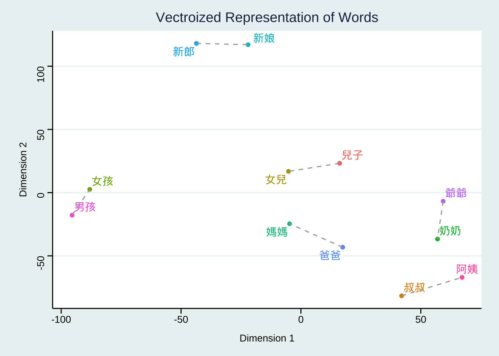
12.2 Vector Space Model for Documents
Now I would like to demonstrate how we can adopt this vector space model to examine the semantics of documents.
12.2.1 Data Processing Flowchart
In Chapter 5, I have provided a data processing flowchart for the English texts. Here I would like to add to the flowchart several follow-up steps with respect to the vector-based representation of the corpus documents.
Most importantly, a new object class is introduced in Figure 12.1, i.e., the dfm object in quanteda. It stands for Document-Feature-Matrix. It’s a two-dimensional co-occurrence table, with the rows being the documents in the corpus, and columns being the features used to characterize the documents. The cells in the matrix are the co-occurrence statistics between each document and the feature.
Different ways of operationalizing the features and the cell values may lead to different types of dfm. In this section, I would like to show you how to create dfm of a corpus and what are the common ways to define features and cell values for the analysis of document semantics via vector space representation.
Figure 12.1: English Text Analytics Flowchart (v2)
12.2.2 Document-Feature Matrix (dfm)
To create a dfm, i.e., Dcument-Feature-Matrix, of your corpus data, there are generally three steps:
- Create an
corpusobject of your data; - Tokenize the
corpusobject into atokensobject; - Create the
dfmobject based on thetokensobject
In this tutorial, I will use the same English dataset as we discussed in Chapter 5, the data_corpus_inaugural, preloaded in the package quanteda.
For English data, the process is simple: we first load the corpus and create a dfm object of the corpus using dfm().
## `corpus`
corp_us <- data_corpus_inaugural
## `tokens`
corp_us_tokens <- tokens(corp_us)
## `dfm`
corp_us_dfm <- dfm(corp_us_tokens)
## check dfm
corp_us_dfmDocument-feature matrix of: 60 documents, 9,591 features (91.94% sparse) and 4 docvars.
features
docs fellow-citizens of the senate and house representatives :
1789-Washington 1 71 116 1 48 2 2 1
1793-Washington 0 11 13 0 2 0 0 1
1797-Adams 3 140 163 1 130 0 2 0
1801-Jefferson 2 104 130 0 81 0 0 1
1805-Jefferson 0 101 143 0 93 0 0 0
1809-Madison 1 69 104 0 43 0 0 0
features
docs among vicissitudes
1789-Washington 1 1
1793-Washington 0 0
1797-Adams 4 0
1801-Jefferson 1 0
1805-Jefferson 7 0
1809-Madison 0 0
[ reached max_ndoc ... 54 more documents, reached max_nfeat ... 9,581 more features ][1] "corpus" "character"[1] "corpus" "character"[1] "dfm"
attr(,"package")
[1] "quanteda"12.2.3 Intuition for DFM
What is dfm anyway?
A document-feature-matrix is a simple co-occurrence table.
In a dfm, each row refers to a document in the corpus, and the column refers to a linguistic unit that occurs in the document(s) (i.e., the contextual features in the vector space model).
- If the contextual feature is a word, then this
dfmwould be a document-word-matrix, with the columns referring to all the words observed in the corpus, i.e., the vocabulary of the corpus. - If the contextual feature is an n-gram, then this
dfmwould be a document-ngram-matrix, with the columns referring to all the n-grams observed in the corpus.
What about the values in the cells of dfm?
- The most intuitive values in the cells are the co-occurrence frequencies, i.e., the number of occurrences of the contextual feature (i.e., column) in a particular document (i.e., row).
For example, in the corpus data_corpus_inaugural, based on the corp_us_dfm created earlier, we can see that in the first document, i.e., 1789-Washington, there are 2 occurrences of “representatives”, 48 occurrences of “and”.
Bag of Words Representation
By default, the dfm() would create a document-by-word matrix, i.e., generating words as the contextual features.
A dfm with words as the contextual features is the simplest way to characterize the documents in the corpus, namely, to analyze the semantics of the documents by looking at the words occurring in the documents.
This document-by-word matrix treats each document as bags of words. That is, how the words are arranged relative to each other is ignored (i.e., the morpho-syntactic relationships between words in texts are greatly ignored). Therefore, this document-by-word dfm should be the most naive characterization of the texts.
In many computational tasks, however, it turns out that this simple bag-of-words model is very effective in modeling the semantics of the documents.
12.2.4 More sophisticated DFM
The dfm() with the default settings creates a document-by-word matrix. We can create more sophisticated DFM by refining the contextual features.
A document-by-ngram matrix can be more informative because the contextual features take into account (partial & limited) sequential information between words. In quanteda, to obtain an ngram-based dfm:
- Create an ngram-based
tokensusingtokens_ngrams()first; - Create an ngram-based
dfmbased on the ngram-basedtokens;
## create ngrams tokens
corp_us_ngrams <- tokens_ngrams(corp_us_tokens,
n = 2:3)
## create ngram-based dfm
corp_us_ngrams_dfm <- dfm(corp_us_ngrams)12.2.5 Distance/Similarity Metrics
The advantage of creating a document-feature-matrix is that now each document is not only a series of character strings, but also a list of numeric values (i.e., a row of co-occurring frequencies), which can be compared mathematically with the other documents (i.e., the other rows).
For example, now the document 1789-Washington can be represented as a series of numeric values:
[1] 1 71 116 1 48 2 2 1 1 1 1 48 1 8 2 3 12 1
[19] 8 17 1 1 6 18 36 1 4 1 20 9 2 70 1 15 1 2
[37] 5 1 23 4 3 23 1 22 5 2 2 9 2 1 3 1 2 7
[55] 14 2 1 1 1 1 31 1 1 10 2 1 14 1 1 1 1 2
[73] 9 8 2 2 1 1 1 1 1 1 1 1 1 1 11 1 1 1
[91] 1 2 1 4 1 1 1 3 1 1 4 1 1 3 5 2 4 1
[109] 1 3 1 1 1 1 3 1 1 1 2 1 4 23 2 1 2 1
[127] 10 1 1 3 2 1 7 5 7 1 1 1 4 2 1 1 2 1
[145] 1 1 1 1 3 1 1 1 1 2 1 5 1 1 1 1 2 2
[163] 1 1 1 1 1 12 1 1 1 1 1 10 1 1 1 4 1 1
[181] 3 2 1 3 1 3 2 5 1 6 1 1 2 1 1 1 2 2
[199] 1 1 1 1 2 2 1 1 1 1 2 1 1 2 1 1 6 1
[217] 2 3 4 4 2 8 1 2 3 1 1 1 1 1 1 2 1 1
[235] 1 1 1 3 1 2 3 2 4 1 2 3 2 3 2 1 1 1
[253] 1 1 1 1 1 1 1 1 1 1 2 1 1 1 1 8 1 1
[271] 1 2 3 1 2 1 1 3 1 1 2 1 1 1 1 2 2 1
[289] 1 1 1 2 1 2 1 1 1 1 1 1 1 1 1 1 1 1
[307] 5 1 1 3 3 1 2 1 1 2 1 1 2 1 2 2 1 1
[325] 2 1 1 3 2 3 1 2 2 1 1 1 1 2 1 1 1 1
[343] 1 1 1 1 2 1 2 1 3 1 1 1 1 1 1 2 1 1
[361] 1 1 1 1 1 1 1 1 2 1 1 1 1 1 1 1 1 1
[379] 2 1 1 1 1 1 1 1 1 1 1 1 1 1 2 1 1 1
[397] 1 1 1 1 1 1 1 1 1 1 1 1 1 1 4 1 1 1
[415] 1 1 1 2 3 1 1 1 1 1 1 1 1 1 1 1 1 1
[433] 1 2 1 1 1 1 1 1 1 1 1 1 1 1 1 1 1 1
[451] 1 1 1 1 1 1 2 1 1 1 1 1 1 1 2 1 1 1
[469] 1 1 1 1 1 1 1 1 1 1 1 1 1 1 1 1 2 1
[487] 1 1 1 1 1 1 1 1 1 1 1 1 1 1 1 1 1 1
[505] 1 1 1 1 1 1 1 1 1 1 1 1 1 1 1 1 1 1
[523] 1 1 1 1 1 1 1 1 1 1 1 1 1 1 1 2 1 1
[541] 1 1 1 1 3 1 1 1 1 1 1 1 1 1 1 1 1 1
[559] 1 1 1 1 1 1 1 1 1 1 1 1 1 1 1 1 1 1
[577] 1 1 1 1 1 1 1 1 1 1 1 1 1 1 1 1 1 1
[595] 1 1 1 1 1 1 1 1 1 0 0 0 0 0 0 0 0 0
[613] 0 0 0 0 0 0 0 0 0 0 0 0 0 0 0 0 0 0
[631] 0 0 0 0 0 0 0 0 0 0 0 0 0 0 0 0 0 0
[649] 0 0 0 0 0 0 0 0 0 0 0 0 0 0 0 0 0 0
[667] 0 0 0 0 0 0 0 0 0 0 0 0 0 0 0 0 0 0
[685] 0 0 0 0 0 0 0 0 0 0 0 0 0 0 0 0 0 0
[703] 0 0 0 0 0 0 0 0 0 0 0 0 0 0 0 0 0 0
[721] 0 0 0 0 0 0 0 0 0 0 0 0 0 0 0 0 0 0
[739] 0 0 0 0 0 0 0 0 0 0 0 0 0 0 0 0 0 0
[757] 0 0 0 0 0 0 0 0 0 0 0 0 0 0 0 0 0 0
[775] 0 0 0 0 0 0 0 0 0 0 0 0 0 0 0 0 0 0
[793] 0 0 0 0 0 0 0 0 0 0 0 0 0 0 0 0 0 0
[811] 0 0 0 0 0 0 0 0 0 0 0 0 0 0 0 0 0 0
[829] 0 0 0 0 0 0 0 0 0 0 0 0 0 0 0 0 0 0
[847] 0 0 0 0 0 0 0 0 0 0 0 0 0 0 0 0 0 0
[865] 0 0 0 0 0 0 0 0 0 0 0 0 0 0 0 0 0 0
[883] 0 0 0 0 0 0 0 0 0 0 0 0 0 0 0 0 0 0
[901] 0 0 0 0 0 0 0 0 0 0 0 0 0 0 0 0 0 0
[919] 0 0 0 0 0 0 0 0 0 0 0 0 0 0 0 0 0 0
[937] 0 0 0 0 0 0 0 0 0 0 0 0 0 0 0 0 0 0
[955] 0 0 0 0 0 0 0 0 0 0 0 0 0 0 0 0 0 0
[973] 0 0 0 0 0 0 0 0 0 0 0 0 0 0 0 0 0 0
[991] 0 0 0 0 0 0 0 0 0 0 0 0 0 0 0 0 0 0
[1009] 0 0 0 0 0 0 0 0 0 0 0 0 0 0 0 0 0 0
[1027] 0 0 0 0 0 0 0 0 0 0 0 0 0 0 0 0 0 0
[1045] 0 0 0 0 0 0 0 0 0 0 0 0 0 0 0 0 0 0
[1063] 0 0 0 0 0 0 0 0 0 0 0 0 0 0 0 0 0 0
[1081] 0 0 0 0 0 0 0 0 0 0 0 0 0 0 0 0 0 0
[1099] 0 0 0 0 0 0 0 0 0 0 0 0 0 0 0 0 0 0
[1117] 0 0 0 0 0 0 0 0 0 0 0 0 0 0 0 0 0 0
[1135] 0 0 0 0 0 0 0 0 0 0 0 0 0 0 0 0 0 0
[1153] 0 0 0 0 0 0 0 0 0 0 0 0 0 0 0 0 0 0
[1171] 0 0 0 0 0 0 0 0 0 0 0 0 0 0 0 0 0 0
[1189] 0 0 0 0 0 0 0 0 0 0 0 0 0 0 0 0 0 0
[1207] 0 0 0 0 0 0 0 0 0 0 0 0 0 0 0 0 0 0
[1225] 0 0 0 0 0 0 0 0 0 0 0 0 0 0 0 0 0 0
[1243] 0 0 0 0 0 0 0 0 0 0 0 0 0 0 0 0 0 0
[1261] 0 0 0 0 0 0 0 0 0 0 0 0 0 0 0 0 0 0
[1279] 0 0 0 0 0 0 0 0 0 0 0 0 0 0 0 0 0 0
[1297] 0 0 0 0 0 0 0 0 0 0 0 0 0 0 0 0 0 0
[1315] 0 0 0 0 0 0 0 0 0 0 0 0 0 0 0 0 0 0
[1333] 0 0 0 0 0 0 0 0 0 0 0 0 0 0 0 0 0 0
[1351] 0 0 0 0 0 0 0 0 0 0 0 0 0 0 0 0 0 0
[1369] 0 0 0 0 0 0 0 0 0 0 0 0 0 0 0 0 0 0
[1387] 0 0 0 0 0 0 0 0 0 0 0 0 0 0 0 0 0 0
[1405] 0 0 0 0 0 0 0 0 0 0 0 0 0 0 0 0 0 0
[1423] 0 0 0 0 0 0 0 0 0 0 0 0 0 0 0 0 0 0
[1441] 0 0 0 0 0 0 0 0 0 0 0 0 0 0 0 0 0 0
[1459] 0 0 0 0 0 0 0 0 0 0 0 0 0 0 0 0 0 0
[1477] 0 0 0 0 0 0 0 0 0 0 0 0 0 0 0 0 0 0
[1495] 0 0 0 0 0 0 0 0 0 0 0 0 0 0 0 0 0 0
[1513] 0 0 0 0 0 0 0 0 0 0 0 0 0 0 0 0 0 0
[1531] 0 0 0 0 0 0 0 0 0 0 0 0 0 0 0 0 0 0
[1549] 0 0 0 0 0 0 0 0 0 0 0 0 0 0 0 0 0 0
[1567] 0 0 0 0 0 0 0 0 0 0 0 0 0 0 0 0 0 0
[1585] 0 0 0 0 0 0 0 0 0 0 0 0 0 0 0 0 0 0
[1603] 0 0 0 0 0 0 0 0 0 0 0 0 0 0 0 0 0 0
[1621] 0 0 0 0 0 0 0 0 0 0 0 0 0 0 0 0 0 0
[1639] 0 0 0 0 0 0 0 0 0 0 0 0 0 0 0 0 0 0
[1657] 0 0 0 0 0 0 0 0 0 0 0 0 0 0 0 0 0 0
[1675] 0 0 0 0 0 0 0 0 0 0 0 0 0 0 0 0 0 0
[1693] 0 0 0 0 0 0 0 0 0 0 0 0 0 0 0 0 0 0
[1711] 0 0 0 0 0 0 0 0 0 0 0 0 0 0 0 0 0 0
[1729] 0 0 0 0 0 0 0 0 0 0 0 0 0 0 0 0 0 0
[1747] 0 0 0 0 0 0 0 0 0 0 0 0 0 0 0 0 0 0
[1765] 0 0 0 0 0 0 0 0 0 0 0 0 0 0 0 0 0 0
[1783] 0 0 0 0 0 0 0 0 0 0 0 0 0 0 0 0 0 0
[1801] 0 0 0 0 0 0 0 0 0 0 0 0 0 0 0 0 0 0
[1819] 0 0 0 0 0 0 0 0 0 0 0 0 0 0 0 0 0 0
[1837] 0 0 0 0 0 0 0 0 0 0 0 0 0 0 0 0 0 0
[1855] 0 0 0 0 0 0 0 0 0 0 0 0 0 0 0 0 0 0
[1873] 0 0 0 0 0 0 0 0 0 0 0 0 0 0 0 0 0 0
[1891] 0 0 0 0 0 0 0 0 0 0 0 0 0 0 0 0 0 0
[1909] 0 0 0 0 0 0 0 0 0 0 0 0 0 0 0 0 0 0
[1927] 0 0 0 0 0 0 0 0 0 0 0 0 0 0 0 0 0 0
[1945] 0 0 0 0 0 0 0 0 0 0 0 0 0 0 0 0 0 0
[1963] 0 0 0 0 0 0 0 0 0 0 0 0 0 0 0 0 0 0
[1981] 0 0 0 0 0 0 0 0 0 0 0 0 0 0 0 0 0 0
[1999] 0 0 0 0 0 0 0 0 0 0 0 0 0 0 0 0 0 0
[2017] 0 0 0 0 0 0 0 0 0 0 0 0 0 0 0 0 0 0
[2035] 0 0 0 0 0 0 0 0 0 0 0 0 0 0 0 0 0 0
[2053] 0 0 0 0 0 0 0 0 0 0 0 0 0 0 0 0 0 0
[2071] 0 0 0 0 0 0 0 0 0 0 0 0 0 0 0 0 0 0
[2089] 0 0 0 0 0 0 0 0 0 0 0 0 0 0 0 0 0 0
[2107] 0 0 0 0 0 0 0 0 0 0 0 0 0 0 0 0 0 0
[2125] 0 0 0 0 0 0 0 0 0 0 0 0 0 0 0 0 0 0
[2143] 0 0 0 0 0 0 0 0 0 0 0 0 0 0 0 0 0 0
[2161] 0 0 0 0 0 0 0 0 0 0 0 0 0 0 0 0 0 0
[2179] 0 0 0 0 0 0 0 0 0 0 0 0 0 0 0 0 0 0
[2197] 0 0 0 0 0 0 0 0 0 0 0 0 0 0 0 0 0 0
[2215] 0 0 0 0 0 0 0 0 0 0 0 0 0 0 0 0 0 0
[2233] 0 0 0 0 0 0 0 0 0 0 0 0 0 0 0 0 0 0
[2251] 0 0 0 0 0 0 0 0 0 0 0 0 0 0 0 0 0 0
[2269] 0 0 0 0 0 0 0 0 0 0 0 0 0 0 0 0 0 0
[2287] 0 0 0 0 0 0 0 0 0 0 0 0 0 0 0 0 0 0
[2305] 0 0 0 0 0 0 0 0 0 0 0 0 0 0 0 0 0 0
[2323] 0 0 0 0 0 0 0 0 0 0 0 0 0 0 0 0 0 0
[2341] 0 0 0 0 0 0 0 0 0 0 0 0 0 0 0 0 0 0
[2359] 0 0 0 0 0 0 0 0 0 0 0 0 0 0 0 0 0 0
[2377] 0 0 0 0 0 0 0 0 0 0 0 0 0 0 0 0 0 0
[2395] 0 0 0 0 0 0 0 0 0 0 0 0 0 0 0 0 0 0
[2413] 0 0 0 0 0 0 0 0 0 0 0 0 0 0 0 0 0 0
[2431] 0 0 0 0 0 0 0 0 0 0 0 0 0 0 0 0 0 0
[2449] 0 0 0 0 0 0 0 0 0 0 0 0 0 0 0 0 0 0
[2467] 0 0 0 0 0 0 0 0 0 0 0 0 0 0 0 0 0 0
[2485] 0 0 0 0 0 0 0 0 0 0 0 0 0 0 0 0 0 0
[2503] 0 0 0 0 0 0 0 0 0 0 0 0 0 0 0 0 0 0
[2521] 0 0 0 0 0 0 0 0 0 0 0 0 0 0 0 0 0 0
[2539] 0 0 0 0 0 0 0 0 0 0 0 0 0 0 0 0 0 0
[2557] 0 0 0 0 0 0 0 0 0 0 0 0 0 0 0 0 0 0
[2575] 0 0 0 0 0 0 0 0 0 0 0 0 0 0 0 0 0 0
[2593] 0 0 0 0 0 0 0 0 0 0 0 0 0 0 0 0 0 0
[2611] 0 0 0 0 0 0 0 0 0 0 0 0 0 0 0 0 0 0
[2629] 0 0 0 0 0 0 0 0 0 0 0 0 0 0 0 0 0 0
[2647] 0 0 0 0 0 0 0 0 0 0 0 0 0 0 0 0 0 0
[2665] 0 0 0 0 0 0 0 0 0 0 0 0 0 0 0 0 0 0
[2683] 0 0 0 0 0 0 0 0 0 0 0 0 0 0 0 0 0 0
[2701] 0 0 0 0 0 0 0 0 0 0 0 0 0 0 0 0 0 0
[2719] 0 0 0 0 0 0 0 0 0 0 0 0 0 0 0 0 0 0
[2737] 0 0 0 0 0 0 0 0 0 0 0 0 0 0 0 0 0 0
[2755] 0 0 0 0 0 0 0 0 0 0 0 0 0 0 0 0 0 0
[2773] 0 0 0 0 0 0 0 0 0 0 0 0 0 0 0 0 0 0
[2791] 0 0 0 0 0 0 0 0 0 0 0 0 0 0 0 0 0 0
[2809] 0 0 0 0 0 0 0 0 0 0 0 0 0 0 0 0 0 0
[2827] 0 0 0 0 0 0 0 0 0 0 0 0 0 0 0 0 0 0
[2845] 0 0 0 0 0 0 0 0 0 0 0 0 0 0 0 0 0 0
[2863] 0 0 0 0 0 0 0 0 0 0 0 0 0 0 0 0 0 0
[2881] 0 0 0 0 0 0 0 0 0 0 0 0 0 0 0 0 0 0
[2899] 0 0 0 0 0 0 0 0 0 0 0 0 0 0 0 0 0 0
[2917] 0 0 0 0 0 0 0 0 0 0 0 0 0 0 0 0 0 0
[2935] 0 0 0 0 0 0 0 0 0 0 0 0 0 0 0 0 0 0
[2953] 0 0 0 0 0 0 0 0 0 0 0 0 0 0 0 0 0 0
[2971] 0 0 0 0 0 0 0 0 0 0 0 0 0 0 0 0 0 0
[2989] 0 0 0 0 0 0 0 0 0 0 0 0 0 0 0 0 0 0
[3007] 0 0 0 0 0 0 0 0 0 0 0 0 0 0 0 0 0 0
[3025] 0 0 0 0 0 0 0 0 0 0 0 0 0 0 0 0 0 0
[3043] 0 0 0 0 0 0 0 0 0 0 0 0 0 0 0 0 0 0
[3061] 0 0 0 0 0 0 0 0 0 0 0 0 0 0 0 0 0 0
[3079] 0 0 0 0 0 0 0 0 0 0 0 0 0 0 0 0 0 0
[3097] 0 0 0 0 0 0 0 0 0 0 0 0 0 0 0 0 0 0
[3115] 0 0 0 0 0 0 0 0 0 0 0 0 0 0 0 0 0 0
[3133] 0 0 0 0 0 0 0 0 0 0 0 0 0 0 0 0 0 0
[3151] 0 0 0 0 0 0 0 0 0 0 0 0 0 0 0 0 0 0
[3169] 0 0 0 0 0 0 0 0 0 0 0 0 0 0 0 0 0 0
[3187] 0 0 0 0 0 0 0 0 0 0 0 0 0 0 0 0 0 0
[3205] 0 0 0 0 0 0 0 0 0 0 0 0 0 0 0 0 0 0
[3223] 0 0 0 0 0 0 0 0 0 0 0 0 0 0 0 0 0 0
[3241] 0 0 0 0 0 0 0 0 0 0 0 0 0 0 0 0 0 0
[3259] 0 0 0 0 0 0 0 0 0 0 0 0 0 0 0 0 0 0
[3277] 0 0 0 0 0 0 0 0 0 0 0 0 0 0 0 0 0 0
[3295] 0 0 0 0 0 0 0 0 0 0 0 0 0 0 0 0 0 0
[3313] 0 0 0 0 0 0 0 0 0 0 0 0 0 0 0 0 0 0
[3331] 0 0 0 0 0 0 0 0 0 0 0 0 0 0 0 0 0 0
[3349] 0 0 0 0 0 0 0 0 0 0 0 0 0 0 0 0 0 0
[3367] 0 0 0 0 0 0 0 0 0 0 0 0 0 0 0 0 0 0
[3385] 0 0 0 0 0 0 0 0 0 0 0 0 0 0 0 0 0 0
[3403] 0 0 0 0 0 0 0 0 0 0 0 0 0 0 0 0 0 0
[3421] 0 0 0 0 0 0 0 0 0 0 0 0 0 0 0 0 0 0
[3439] 0 0 0 0 0 0 0 0 0 0 0 0 0 0 0 0 0 0
[3457] 0 0 0 0 0 0 0 0 0 0 0 0 0 0 0 0 0 0
[3475] 0 0 0 0 0 0 0 0 0 0 0 0 0 0 0 0 0 0
[3493] 0 0 0 0 0 0 0 0 0 0 0 0 0 0 0 0 0 0
[3511] 0 0 0 0 0 0 0 0 0 0 0 0 0 0 0 0 0 0
[3529] 0 0 0 0 0 0 0 0 0 0 0 0 0 0 0 0 0 0
[3547] 0 0 0 0 0 0 0 0 0 0 0 0 0 0 0 0 0 0
[3565] 0 0 0 0 0 0 0 0 0 0 0 0 0 0 0 0 0 0
[3583] 0 0 0 0 0 0 0 0 0 0 0 0 0 0 0 0 0 0
[3601] 0 0 0 0 0 0 0 0 0 0 0 0 0 0 0 0 0 0
[3619] 0 0 0 0 0 0 0 0 0 0 0 0 0 0 0 0 0 0
[3637] 0 0 0 0 0 0 0 0 0 0 0 0 0 0 0 0 0 0
[3655] 0 0 0 0 0 0 0 0 0 0 0 0 0 0 0 0 0 0
[3673] 0 0 0 0 0 0 0 0 0 0 0 0 0 0 0 0 0 0
[3691] 0 0 0 0 0 0 0 0 0 0 0 0 0 0 0 0 0 0
[3709] 0 0 0 0 0 0 0 0 0 0 0 0 0 0 0 0 0 0
[3727] 0 0 0 0 0 0 0 0 0 0 0 0 0 0 0 0 0 0
[3745] 0 0 0 0 0 0 0 0 0 0 0 0 0 0 0 0 0 0
[3763] 0 0 0 0 0 0 0 0 0 0 0 0 0 0 0 0 0 0
[3781] 0 0 0 0 0 0 0 0 0 0 0 0 0 0 0 0 0 0
[3799] 0 0 0 0 0 0 0 0 0 0 0 0 0 0 0 0 0 0
[3817] 0 0 0 0 0 0 0 0 0 0 0 0 0 0 0 0 0 0
[3835] 0 0 0 0 0 0 0 0 0 0 0 0 0 0 0 0 0 0
[3853] 0 0 0 0 0 0 0 0 0 0 0 0 0 0 0 0 0 0
[3871] 0 0 0 0 0 0 0 0 0 0 0 0 0 0 0 0 0 0
[3889] 0 0 0 0 0 0 0 0 0 0 0 0 0 0 0 0 0 0
[3907] 0 0 0 0 0 0 0 0 0 0 0 0 0 0 0 0 0 0
[3925] 0 0 0 0 0 0 0 0 0 0 0 0 0 0 0 0 0 0
[3943] 0 0 0 0 0 0 0 0 0 0 0 0 0 0 0 0 0 0
[3961] 0 0 0 0 0 0 0 0 0 0 0 0 0 0 0 0 0 0
[3979] 0 0 0 0 0 0 0 0 0 0 0 0 0 0 0 0 0 0
[3997] 0 0 0 0 0 0 0 0 0 0 0 0 0 0 0 0 0 0
[4015] 0 0 0 0 0 0 0 0 0 0 0 0 0 0 0 0 0 0
[4033] 0 0 0 0 0 0 0 0 0 0 0 0 0 0 0 0 0 0
[4051] 0 0 0 0 0 0 0 0 0 0 0 0 0 0 0 0 0 0
[4069] 0 0 0 0 0 0 0 0 0 0 0 0 0 0 0 0 0 0
[4087] 0 0 0 0 0 0 0 0 0 0 0 0 0 0 0 0 0 0
[4105] 0 0 0 0 0 0 0 0 0 0 0 0 0 0 0 0 0 0
[4123] 0 0 0 0 0 0 0 0 0 0 0 0 0 0 0 0 0 0
[4141] 0 0 0 0 0 0 0 0 0 0 0 0 0 0 0 0 0 0
[4159] 0 0 0 0 0 0 0 0 0 0 0 0 0 0 0 0 0 0
[4177] 0 0 0 0 0 0 0 0 0 0 0 0 0 0 0 0 0 0
[4195] 0 0 0 0 0 0 0 0 0 0 0 0 0 0 0 0 0 0
[4213] 0 0 0 0 0 0 0 0 0 0 0 0 0 0 0 0 0 0
[4231] 0 0 0 0 0 0 0 0 0 0 0 0 0 0 0 0 0 0
[4249] 0 0 0 0 0 0 0 0 0 0 0 0 0 0 0 0 0 0
[4267] 0 0 0 0 0 0 0 0 0 0 0 0 0 0 0 0 0 0
[4285] 0 0 0 0 0 0 0 0 0 0 0 0 0 0 0 0 0 0
[4303] 0 0 0 0 0 0 0 0 0 0 0 0 0 0 0 0 0 0
[4321] 0 0 0 0 0 0 0 0 0 0 0 0 0 0 0 0 0 0
[4339] 0 0 0 0 0 0 0 0 0 0 0 0 0 0 0 0 0 0
[4357] 0 0 0 0 0 0 0 0 0 0 0 0 0 0 0 0 0 0
[4375] 0 0 0 0 0 0 0 0 0 0 0 0 0 0 0 0 0 0
[4393] 0 0 0 0 0 0 0 0 0 0 0 0 0 0 0 0 0 0
[4411] 0 0 0 0 0 0 0 0 0 0 0 0 0 0 0 0 0 0
[4429] 0 0 0 0 0 0 0 0 0 0 0 0 0 0 0 0 0 0
[4447] 0 0 0 0 0 0 0 0 0 0 0 0 0 0 0 0 0 0
[4465] 0 0 0 0 0 0 0 0 0 0 0 0 0 0 0 0 0 0
[4483] 0 0 0 0 0 0 0 0 0 0 0 0 0 0 0 0 0 0
[4501] 0 0 0 0 0 0 0 0 0 0 0 0 0 0 0 0 0 0
[4519] 0 0 0 0 0 0 0 0 0 0 0 0 0 0 0 0 0 0
[4537] 0 0 0 0 0 0 0 0 0 0 0 0 0 0 0 0 0 0
[4555] 0 0 0 0 0 0 0 0 0 0 0 0 0 0 0 0 0 0
[4573] 0 0 0 0 0 0 0 0 0 0 0 0 0 0 0 0 0 0
[4591] 0 0 0 0 0 0 0 0 0 0 0 0 0 0 0 0 0 0
[4609] 0 0 0 0 0 0 0 0 0 0 0 0 0 0 0 0 0 0
[4627] 0 0 0 0 0 0 0 0 0 0 0 0 0 0 0 0 0 0
[4645] 0 0 0 0 0 0 0 0 0 0 0 0 0 0 0 0 0 0
[4663] 0 0 0 0 0 0 0 0 0 0 0 0 0 0 0 0 0 0
[4681] 0 0 0 0 0 0 0 0 0 0 0 0 0 0 0 0 0 0
[4699] 0 0 0 0 0 0 0 0 0 0 0 0 0 0 0 0 0 0
[4717] 0 0 0 0 0 0 0 0 0 0 0 0 0 0 0 0 0 0
[4735] 0 0 0 0 0 0 0 0 0 0 0 0 0 0 0 0 0 0
[4753] 0 0 0 0 0 0 0 0 0 0 0 0 0 0 0 0 0 0
[4771] 0 0 0 0 0 0 0 0 0 0 0 0 0 0 0 0 0 0
[4789] 0 0 0 0 0 0 0 0 0 0 0 0 0 0 0 0 0 0
[4807] 0 0 0 0 0 0 0 0 0 0 0 0 0 0 0 0 0 0
[4825] 0 0 0 0 0 0 0 0 0 0 0 0 0 0 0 0 0 0
[4843] 0 0 0 0 0 0 0 0 0 0 0 0 0 0 0 0 0 0
[4861] 0 0 0 0 0 0 0 0 0 0 0 0 0 0 0 0 0 0
[4879] 0 0 0 0 0 0 0 0 0 0 0 0 0 0 0 0 0 0
[4897] 0 0 0 0 0 0 0 0 0 0 0 0 0 0 0 0 0 0
[4915] 0 0 0 0 0 0 0 0 0 0 0 0 0 0 0 0 0 0
[4933] 0 0 0 0 0 0 0 0 0 0 0 0 0 0 0 0 0 0
[4951] 0 0 0 0 0 0 0 0 0 0 0 0 0 0 0 0 0 0
[4969] 0 0 0 0 0 0 0 0 0 0 0 0 0 0 0 0 0 0
[4987] 0 0 0 0 0 0 0 0 0 0 0 0 0 0 0 0 0 0
[5005] 0 0 0 0 0 0 0 0 0 0 0 0 0 0 0 0 0 0
[5023] 0 0 0 0 0 0 0 0 0 0 0 0 0 0 0 0 0 0
[5041] 0 0 0 0 0 0 0 0 0 0 0 0 0 0 0 0 0 0
[5059] 0 0 0 0 0 0 0 0 0 0 0 0 0 0 0 0 0 0
[5077] 0 0 0 0 0 0 0 0 0 0 0 0 0 0 0 0 0 0
[5095] 0 0 0 0 0 0 0 0 0 0 0 0 0 0 0 0 0 0
[5113] 0 0 0 0 0 0 0 0 0 0 0 0 0 0 0 0 0 0
[5131] 0 0 0 0 0 0 0 0 0 0 0 0 0 0 0 0 0 0
[5149] 0 0 0 0 0 0 0 0 0 0 0 0 0 0 0 0 0 0
[5167] 0 0 0 0 0 0 0 0 0 0 0 0 0 0 0 0 0 0
[5185] 0 0 0 0 0 0 0 0 0 0 0 0 0 0 0 0 0 0
[5203] 0 0 0 0 0 0 0 0 0 0 0 0 0 0 0 0 0 0
[5221] 0 0 0 0 0 0 0 0 0 0 0 0 0 0 0 0 0 0
[5239] 0 0 0 0 0 0 0 0 0 0 0 0 0 0 0 0 0 0
[5257] 0 0 0 0 0 0 0 0 0 0 0 0 0 0 0 0 0 0
[5275] 0 0 0 0 0 0 0 0 0 0 0 0 0 0 0 0 0 0
[5293] 0 0 0 0 0 0 0 0 0 0 0 0 0 0 0 0 0 0
[5311] 0 0 0 0 0 0 0 0 0 0 0 0 0 0 0 0 0 0
[5329] 0 0 0 0 0 0 0 0 0 0 0 0 0 0 0 0 0 0
[5347] 0 0 0 0 0 0 0 0 0 0 0 0 0 0 0 0 0 0
[5365] 0 0 0 0 0 0 0 0 0 0 0 0 0 0 0 0 0 0
[5383] 0 0 0 0 0 0 0 0 0 0 0 0 0 0 0 0 0 0
[5401] 0 0 0 0 0 0 0 0 0 0 0 0 0 0 0 0 0 0
[5419] 0 0 0 0 0 0 0 0 0 0 0 0 0 0 0 0 0 0
[5437] 0 0 0 0 0 0 0 0 0 0 0 0 0 0 0 0 0 0
[5455] 0 0 0 0 0 0 0 0 0 0 0 0 0 0 0 0 0 0
[5473] 0 0 0 0 0 0 0 0 0 0 0 0 0 0 0 0 0 0
[5491] 0 0 0 0 0 0 0 0 0 0 0 0 0 0 0 0 0 0
[5509] 0 0 0 0 0 0 0 0 0 0 0 0 0 0 0 0 0 0
[5527] 0 0 0 0 0 0 0 0 0 0 0 0 0 0 0 0 0 0
[5545] 0 0 0 0 0 0 0 0 0 0 0 0 0 0 0 0 0 0
[5563] 0 0 0 0 0 0 0 0 0 0 0 0 0 0 0 0 0 0
[5581] 0 0 0 0 0 0 0 0 0 0 0 0 0 0 0 0 0 0
[5599] 0 0 0 0 0 0 0 0 0 0 0 0 0 0 0 0 0 0
[5617] 0 0 0 0 0 0 0 0 0 0 0 0 0 0 0 0 0 0
[5635] 0 0 0 0 0 0 0 0 0 0 0 0 0 0 0 0 0 0
[5653] 0 0 0 0 0 0 0 0 0 0 0 0 0 0 0 0 0 0
[5671] 0 0 0 0 0 0 0 0 0 0 0 0 0 0 0 0 0 0
[5689] 0 0 0 0 0 0 0 0 0 0 0 0 0 0 0 0 0 0
[5707] 0 0 0 0 0 0 0 0 0 0 0 0 0 0 0 0 0 0
[5725] 0 0 0 0 0 0 0 0 0 0 0 0 0 0 0 0 0 0
[5743] 0 0 0 0 0 0 0 0 0 0 0 0 0 0 0 0 0 0
[5761] 0 0 0 0 0 0 0 0 0 0 0 0 0 0 0 0 0 0
[5779] 0 0 0 0 0 0 0 0 0 0 0 0 0 0 0 0 0 0
[5797] 0 0 0 0 0 0 0 0 0 0 0 0 0 0 0 0 0 0
[5815] 0 0 0 0 0 0 0 0 0 0 0 0 0 0 0 0 0 0
[5833] 0 0 0 0 0 0 0 0 0 0 0 0 0 0 0 0 0 0
[5851] 0 0 0 0 0 0 0 0 0 0 0 0 0 0 0 0 0 0
[5869] 0 0 0 0 0 0 0 0 0 0 0 0 0 0 0 0 0 0
[5887] 0 0 0 0 0 0 0 0 0 0 0 0 0 0 0 0 0 0
[5905] 0 0 0 0 0 0 0 0 0 0 0 0 0 0 0 0 0 0
[5923] 0 0 0 0 0 0 0 0 0 0 0 0 0 0 0 0 0 0
[5941] 0 0 0 0 0 0 0 0 0 0 0 0 0 0 0 0 0 0
[5959] 0 0 0 0 0 0 0 0 0 0 0 0 0 0 0 0 0 0
[5977] 0 0 0 0 0 0 0 0 0 0 0 0 0 0 0 0 0 0
[5995] 0 0 0 0 0 0 0 0 0 0 0 0 0 0 0 0 0 0
[6013] 0 0 0 0 0 0 0 0 0 0 0 0 0 0 0 0 0 0
[6031] 0 0 0 0 0 0 0 0 0 0 0 0 0 0 0 0 0 0
[6049] 0 0 0 0 0 0 0 0 0 0 0 0 0 0 0 0 0 0
[6067] 0 0 0 0 0 0 0 0 0 0 0 0 0 0 0 0 0 0
[6085] 0 0 0 0 0 0 0 0 0 0 0 0 0 0 0 0 0 0
[6103] 0 0 0 0 0 0 0 0 0 0 0 0 0 0 0 0 0 0
[6121] 0 0 0 0 0 0 0 0 0 0 0 0 0 0 0 0 0 0
[6139] 0 0 0 0 0 0 0 0 0 0 0 0 0 0 0 0 0 0
[6157] 0 0 0 0 0 0 0 0 0 0 0 0 0 0 0 0 0 0
[6175] 0 0 0 0 0 0 0 0 0 0 0 0 0 0 0 0 0 0
[6193] 0 0 0 0 0 0 0 0 0 0 0 0 0 0 0 0 0 0
[6211] 0 0 0 0 0 0 0 0 0 0 0 0 0 0 0 0 0 0
[6229] 0 0 0 0 0 0 0 0 0 0 0 0 0 0 0 0 0 0
[6247] 0 0 0 0 0 0 0 0 0 0 0 0 0 0 0 0 0 0
[6265] 0 0 0 0 0 0 0 0 0 0 0 0 0 0 0 0 0 0
[6283] 0 0 0 0 0 0 0 0 0 0 0 0 0 0 0 0 0 0
[6301] 0 0 0 0 0 0 0 0 0 0 0 0 0 0 0 0 0 0
[6319] 0 0 0 0 0 0 0 0 0 0 0 0 0 0 0 0 0 0
[6337] 0 0 0 0 0 0 0 0 0 0 0 0 0 0 0 0 0 0
[6355] 0 0 0 0 0 0 0 0 0 0 0 0 0 0 0 0 0 0
[6373] 0 0 0 0 0 0 0 0 0 0 0 0 0 0 0 0 0 0
[6391] 0 0 0 0 0 0 0 0 0 0 0 0 0 0 0 0 0 0
[6409] 0 0 0 0 0 0 0 0 0 0 0 0 0 0 0 0 0 0
[6427] 0 0 0 0 0 0 0 0 0 0 0 0 0 0 0 0 0 0
[6445] 0 0 0 0 0 0 0 0 0 0 0 0 0 0 0 0 0 0
[6463] 0 0 0 0 0 0 0 0 0 0 0 0 0 0 0 0 0 0
[6481] 0 0 0 0 0 0 0 0 0 0 0 0 0 0 0 0 0 0
[6499] 0 0 0 0 0 0 0 0 0 0 0 0 0 0 0 0 0 0
[6517] 0 0 0 0 0 0 0 0 0 0 0 0 0 0 0 0 0 0
[6535] 0 0 0 0 0 0 0 0 0 0 0 0 0 0 0 0 0 0
[6553] 0 0 0 0 0 0 0 0 0 0 0 0 0 0 0 0 0 0
[6571] 0 0 0 0 0 0 0 0 0 0 0 0 0 0 0 0 0 0
[6589] 0 0 0 0 0 0 0 0 0 0 0 0 0 0 0 0 0 0
[6607] 0 0 0 0 0 0 0 0 0 0 0 0 0 0 0 0 0 0
[6625] 0 0 0 0 0 0 0 0 0 0 0 0 0 0 0 0 0 0
[6643] 0 0 0 0 0 0 0 0 0 0 0 0 0 0 0 0 0 0
[6661] 0 0 0 0 0 0 0 0 0 0 0 0 0 0 0 0 0 0
[6679] 0 0 0 0 0 0 0 0 0 0 0 0 0 0 0 0 0 0
[6697] 0 0 0 0 0 0 0 0 0 0 0 0 0 0 0 0 0 0
[6715] 0 0 0 0 0 0 0 0 0 0 0 0 0 0 0 0 0 0
[6733] 0 0 0 0 0 0 0 0 0 0 0 0 0 0 0 0 0 0
[6751] 0 0 0 0 0 0 0 0 0 0 0 0 0 0 0 0 0 0
[6769] 0 0 0 0 0 0 0 0 0 0 0 0 0 0 0 0 0 0
[6787] 0 0 0 0 0 0 0 0 0 0 0 0 0 0 0 0 0 0
[6805] 0 0 0 0 0 0 0 0 0 0 0 0 0 0 0 0 0 0
[6823] 0 0 0 0 0 0 0 0 0 0 0 0 0 0 0 0 0 0
[6841] 0 0 0 0 0 0 0 0 0 0 0 0 0 0 0 0 0 0
[6859] 0 0 0 0 0 0 0 0 0 0 0 0 0 0 0 0 0 0
[6877] 0 0 0 0 0 0 0 0 0 0 0 0 0 0 0 0 0 0
[6895] 0 0 0 0 0 0 0 0 0 0 0 0 0 0 0 0 0 0
[6913] 0 0 0 0 0 0 0 0 0 0 0 0 0 0 0 0 0 0
[6931] 0 0 0 0 0 0 0 0 0 0 0 0 0 0 0 0 0 0
[6949] 0 0 0 0 0 0 0 0 0 0 0 0 0 0 0 0 0 0
[6967] 0 0 0 0 0 0 0 0 0 0 0 0 0 0 0 0 0 0
[6985] 0 0 0 0 0 0 0 0 0 0 0 0 0 0 0 0 0 0
[7003] 0 0 0 0 0 0 0 0 0 0 0 0 0 0 0 0 0 0
[7021] 0 0 0 0 0 0 0 0 0 0 0 0 0 0 0 0 0 0
[7039] 0 0 0 0 0 0 0 0 0 0 0 0 0 0 0 0 0 0
[7057] 0 0 0 0 0 0 0 0 0 0 0 0 0 0 0 0 0 0
[7075] 0 0 0 0 0 0 0 0 0 0 0 0 0 0 0 0 0 0
[7093] 0 0 0 0 0 0 0 0 0 0 0 0 0 0 0 0 0 0
[7111] 0 0 0 0 0 0 0 0 0 0 0 0 0 0 0 0 0 0
[7129] 0 0 0 0 0 0 0 0 0 0 0 0 0 0 0 0 0 0
[7147] 0 0 0 0 0 0 0 0 0 0 0 0 0 0 0 0 0 0
[7165] 0 0 0 0 0 0 0 0 0 0 0 0 0 0 0 0 0 0
[7183] 0 0 0 0 0 0 0 0 0 0 0 0 0 0 0 0 0 0
[7201] 0 0 0 0 0 0 0 0 0 0 0 0 0 0 0 0 0 0
[7219] 0 0 0 0 0 0 0 0 0 0 0 0 0 0 0 0 0 0
[7237] 0 0 0 0 0 0 0 0 0 0 0 0 0 0 0 0 0 0
[7255] 0 0 0 0 0 0 0 0 0 0 0 0 0 0 0 0 0 0
[7273] 0 0 0 0 0 0 0 0 0 0 0 0 0 0 0 0 0 0
[7291] 0 0 0 0 0 0 0 0 0 0 0 0 0 0 0 0 0 0
[7309] 0 0 0 0 0 0 0 0 0 0 0 0 0 0 0 0 0 0
[7327] 0 0 0 0 0 0 0 0 0 0 0 0 0 0 0 0 0 0
[7345] 0 0 0 0 0 0 0 0 0 0 0 0 0 0 0 0 0 0
[7363] 0 0 0 0 0 0 0 0 0 0 0 0 0 0 0 0 0 0
[7381] 0 0 0 0 0 0 0 0 0 0 0 0 0 0 0 0 0 0
[7399] 0 0 0 0 0 0 0 0 0 0 0 0 0 0 0 0 0 0
[7417] 0 0 0 0 0 0 0 0 0 0 0 0 0 0 0 0 0 0
[7435] 0 0 0 0 0 0 0 0 0 0 0 0 0 0 0 0 0 0
[7453] 0 0 0 0 0 0 0 0 0 0 0 0 0 0 0 0 0 0
[7471] 0 0 0 0 0 0 0 0 0 0 0 0 0 0 0 0 0 0
[7489] 0 0 0 0 0 0 0 0 0 0 0 0 0 0 0 0 0 0
[7507] 0 0 0 0 0 0 0 0 0 0 0 0 0 0 0 0 0 0
[7525] 0 0 0 0 0 0 0 0 0 0 0 0 0 0 0 0 0 0
[7543] 0 0 0 0 0 0 0 0 0 0 0 0 0 0 0 0 0 0
[7561] 0 0 0 0 0 0 0 0 0 0 0 0 0 0 0 0 0 0
[7579] 0 0 0 0 0 0 0 0 0 0 0 0 0 0 0 0 0 0
[7597] 0 0 0 0 0 0 0 0 0 0 0 0 0 0 0 0 0 0
[7615] 0 0 0 0 0 0 0 0 0 0 0 0 0 0 0 0 0 0
[7633] 0 0 0 0 0 0 0 0 0 0 0 0 0 0 0 0 0 0
[7651] 0 0 0 0 0 0 0 0 0 0 0 0 0 0 0 0 0 0
[7669] 0 0 0 0 0 0 0 0 0 0 0 0 0 0 0 0 0 0
[7687] 0 0 0 0 0 0 0 0 0 0 0 0 0 0 0 0 0 0
[7705] 0 0 0 0 0 0 0 0 0 0 0 0 0 0 0 0 0 0
[7723] 0 0 0 0 0 0 0 0 0 0 0 0 0 0 0 0 0 0
[7741] 0 0 0 0 0 0 0 0 0 0 0 0 0 0 0 0 0 0
[7759] 0 0 0 0 0 0 0 0 0 0 0 0 0 0 0 0 0 0
[7777] 0 0 0 0 0 0 0 0 0 0 0 0 0 0 0 0 0 0
[7795] 0 0 0 0 0 0 0 0 0 0 0 0 0 0 0 0 0 0
[7813] 0 0 0 0 0 0 0 0 0 0 0 0 0 0 0 0 0 0
[7831] 0 0 0 0 0 0 0 0 0 0 0 0 0 0 0 0 0 0
[7849] 0 0 0 0 0 0 0 0 0 0 0 0 0 0 0 0 0 0
[7867] 0 0 0 0 0 0 0 0 0 0 0 0 0 0 0 0 0 0
[7885] 0 0 0 0 0 0 0 0 0 0 0 0 0 0 0 0 0 0
[7903] 0 0 0 0 0 0 0 0 0 0 0 0 0 0 0 0 0 0
[7921] 0 0 0 0 0 0 0 0 0 0 0 0 0 0 0 0 0 0
[7939] 0 0 0 0 0 0 0 0 0 0 0 0 0 0 0 0 0 0
[7957] 0 0 0 0 0 0 0 0 0 0 0 0 0 0 0 0 0 0
[7975] 0 0 0 0 0 0 0 0 0 0 0 0 0 0 0 0 0 0
[7993] 0 0 0 0 0 0 0 0 0 0 0 0 0 0 0 0 0 0
[8011] 0 0 0 0 0 0 0 0 0 0 0 0 0 0 0 0 0 0
[8029] 0 0 0 0 0 0 0 0 0 0 0 0 0 0 0 0 0 0
[8047] 0 0 0 0 0 0 0 0 0 0 0 0 0 0 0 0 0 0
[8065] 0 0 0 0 0 0 0 0 0 0 0 0 0 0 0 0 0 0
[8083] 0 0 0 0 0 0 0 0 0 0 0 0 0 0 0 0 0 0
[8101] 0 0 0 0 0 0 0 0 0 0 0 0 0 0 0 0 0 0
[8119] 0 0 0 0 0 0 0 0 0 0 0 0 0 0 0 0 0 0
[8137] 0 0 0 0 0 0 0 0 0 0 0 0 0 0 0 0 0 0
[8155] 0 0 0 0 0 0 0 0 0 0 0 0 0 0 0 0 0 0
[8173] 0 0 0 0 0 0 0 0 0 0 0 0 0 0 0 0 0 0
[8191] 0 0 0 0 0 0 0 0 0 0 0 0 0 0 0 0 0 0
[8209] 0 0 0 0 0 0 0 0 0 0 0 0 0 0 0 0 0 0
[8227] 0 0 0 0 0 0 0 0 0 0 0 0 0 0 0 0 0 0
[8245] 0 0 0 0 0 0 0 0 0 0 0 0 0 0 0 0 0 0
[8263] 0 0 0 0 0 0 0 0 0 0 0 0 0 0 0 0 0 0
[8281] 0 0 0 0 0 0 0 0 0 0 0 0 0 0 0 0 0 0
[8299] 0 0 0 0 0 0 0 0 0 0 0 0 0 0 0 0 0 0
[8317] 0 0 0 0 0 0 0 0 0 0 0 0 0 0 0 0 0 0
[8335] 0 0 0 0 0 0 0 0 0 0 0 0 0 0 0 0 0 0
[8353] 0 0 0 0 0 0 0 0 0 0 0 0 0 0 0 0 0 0
[8371] 0 0 0 0 0 0 0 0 0 0 0 0 0 0 0 0 0 0
[8389] 0 0 0 0 0 0 0 0 0 0 0 0 0 0 0 0 0 0
[8407] 0 0 0 0 0 0 0 0 0 0 0 0 0 0 0 0 0 0
[8425] 0 0 0 0 0 0 0 0 0 0 0 0 0 0 0 0 0 0
[8443] 0 0 0 0 0 0 0 0 0 0 0 0 0 0 0 0 0 0
[8461] 0 0 0 0 0 0 0 0 0 0 0 0 0 0 0 0 0 0
[8479] 0 0 0 0 0 0 0 0 0 0 0 0 0 0 0 0 0 0
[8497] 0 0 0 0 0 0 0 0 0 0 0 0 0 0 0 0 0 0
[8515] 0 0 0 0 0 0 0 0 0 0 0 0 0 0 0 0 0 0
[8533] 0 0 0 0 0 0 0 0 0 0 0 0 0 0 0 0 0 0
[8551] 0 0 0 0 0 0 0 0 0 0 0 0 0 0 0 0 0 0
[8569] 0 0 0 0 0 0 0 0 0 0 0 0 0 0 0 0 0 0
[8587] 0 0 0 0 0 0 0 0 0 0 0 0 0 0 0 0 0 0
[8605] 0 0 0 0 0 0 0 0 0 0 0 0 0 0 0 0 0 0
[8623] 0 0 0 0 0 0 0 0 0 0 0 0 0 0 0 0 0 0
[8641] 0 0 0 0 0 0 0 0 0 0 0 0 0 0 0 0 0 0
[8659] 0 0 0 0 0 0 0 0 0 0 0 0 0 0 0 0 0 0
[8677] 0 0 0 0 0 0 0 0 0 0 0 0 0 0 0 0 0 0
[8695] 0 0 0 0 0 0 0 0 0 0 0 0 0 0 0 0 0 0
[8713] 0 0 0 0 0 0 0 0 0 0 0 0 0 0 0 0 0 0
[8731] 0 0 0 0 0 0 0 0 0 0 0 0 0 0 0 0 0 0
[8749] 0 0 0 0 0 0 0 0 0 0 0 0 0 0 0 0 0 0
[8767] 0 0 0 0 0 0 0 0 0 0 0 0 0 0 0 0 0 0
[8785] 0 0 0 0 0 0 0 0 0 0 0 0 0 0 0 0 0 0
[8803] 0 0 0 0 0 0 0 0 0 0 0 0 0 0 0 0 0 0
[8821] 0 0 0 0 0 0 0 0 0 0 0 0 0 0 0 0 0 0
[8839] 0 0 0 0 0 0 0 0 0 0 0 0 0 0 0 0 0 0
[8857] 0 0 0 0 0 0 0 0 0 0 0 0 0 0 0 0 0 0
[8875] 0 0 0 0 0 0 0 0 0 0 0 0 0 0 0 0 0 0
[8893] 0 0 0 0 0 0 0 0 0 0 0 0 0 0 0 0 0 0
[8911] 0 0 0 0 0 0 0 0 0 0 0 0 0 0 0 0 0 0
[8929] 0 0 0 0 0 0 0 0 0 0 0 0 0 0 0 0 0 0
[8947] 0 0 0 0 0 0 0 0 0 0 0 0 0 0 0 0 0 0
[8965] 0 0 0 0 0 0 0 0 0 0 0 0 0 0 0 0 0 0
[8983] 0 0 0 0 0 0 0 0 0 0 0 0 0 0 0 0 0 0
[9001] 0 0 0 0 0 0 0 0 0 0 0 0 0 0 0 0 0 0
[9019] 0 0 0 0 0 0 0 0 0 0 0 0 0 0 0 0 0 0
[9037] 0 0 0 0 0 0 0 0 0 0 0 0 0 0 0 0 0 0
[9055] 0 0 0 0 0 0 0 0 0 0 0 0 0 0 0 0 0 0
[9073] 0 0 0 0 0 0 0 0 0 0 0 0 0 0 0 0 0 0
[9091] 0 0 0 0 0 0 0 0 0 0 0 0 0 0 0 0 0 0
[9109] 0 0 0 0 0 0 0 0 0 0 0 0 0 0 0 0 0 0
[9127] 0 0 0 0 0 0 0 0 0 0 0 0 0 0 0 0 0 0
[9145] 0 0 0 0 0 0 0 0 0 0 0 0 0 0 0 0 0 0
[9163] 0 0 0 0 0 0 0 0 0 0 0 0 0 0 0 0 0 0
[9181] 0 0 0 0 0 0 0 0 0 0 0 0 0 0 0 0 0 0
[9199] 0 0 0 0 0 0 0 0 0 0 0 0 0 0 0 0 0 0
[9217] 0 0 0 0 0 0 0 0 0 0 0 0 0 0 0 0 0 0
[9235] 0 0 0 0 0 0 0 0 0 0 0 0 0 0 0 0 0 0
[9253] 0 0 0 0 0 0 0 0 0 0 0 0 0 0 0 0 0 0
[9271] 0 0 0 0 0 0 0 0 0 0 0 0 0 0 0 0 0 0
[9289] 0 0 0 0 0 0 0 0 0 0 0 0 0 0 0 0 0 0
[9307] 0 0 0 0 0 0 0 0 0 0 0 0 0 0 0 0 0 0
[9325] 0 0 0 0 0 0 0 0 0 0 0 0 0 0 0 0 0 0
[9343] 0 0 0 0 0 0 0 0 0 0 0 0 0 0 0 0 0 0
[9361] 0 0 0 0 0 0 0 0 0 0 0 0 0 0 0 0 0 0
[9379] 0 0 0 0 0 0 0 0 0 0 0 0 0 0 0 0 0 0
[9397] 0 0 0 0 0 0 0 0 0 0 0 0 0 0 0 0 0 0
[9415] 0 0 0 0 0 0 0 0 0 0 0 0 0 0 0 0 0 0
[9433] 0 0 0 0 0 0 0 0 0 0 0 0 0 0 0 0 0 0
[9451] 0 0 0 0 0 0 0 0 0 0 0 0 0 0 0 0 0 0
[9469] 0 0 0 0 0 0 0 0 0 0 0 0 0 0 0 0 0 0
[9487] 0 0 0 0 0 0 0 0 0 0 0 0 0 0 0 0 0 0
[9505] 0 0 0 0 0 0 0 0 0 0 0 0 0 0 0 0 0 0
[9523] 0 0 0 0 0 0 0 0 0 0 0 0 0 0 0 0 0 0
[9541] 0 0 0 0 0 0 0 0 0 0 0 0 0 0 0 0 0 0
[9559] 0 0 0 0 0 0 0 0 0 0 0 0 0 0 0 0 0 0
[9577] 0 0 0 0 0 0 0 0 0 0 0 0 0 0 0The idea is that if two documents co-occur with similar sets of contextual features, they are more likely to be similar in their semantics as well.
And now with the numeric representation of the documents, we can quantify these similarities.
Take a two-dimensional space for instance.
Let’s assume that we have three simple documents: \(x\), \(y\), \(z\), and each document is vectorized as a vector of two numeric values.
If we visualize these document vectors in a two-dimensional space, we can compute their distance/similarity mathematically.
In Math, there are in general two types of metrics to measure the relationship between vectors: distance-based vs. similarity-based metrics.
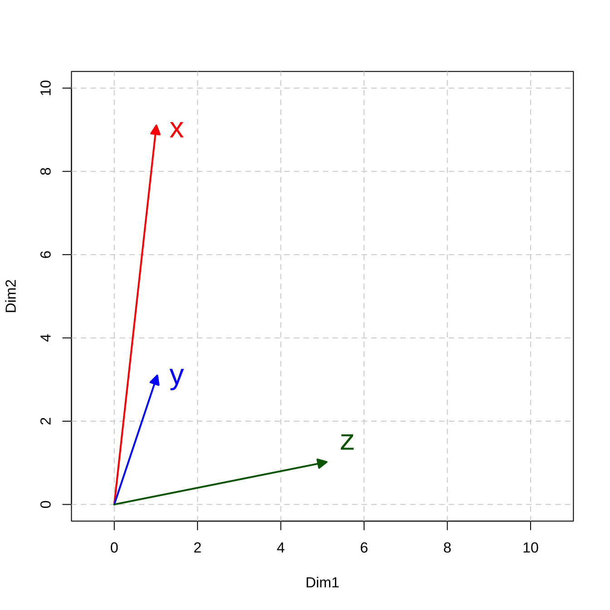
Figure 12.2: Vector Representation
Distance-based Metrics
Many distance measures of vectors are based on the following formula and differ in the parameter \(k\).
\[\big( \sum_{i = 1}^{n}{|x_i - y_i|^k}\big)^{\frac{1}{k}}\]
The n in the above formula refers to the number of dimensions of the vectors. (In other words, all the concepts we discuss here can be easily extended to vectors in multidimensional spaces.)
When k is set to 2, it computes the famous Euclidean distance of two vectors, i.e., the direct spatial distance between two points on the n-dimensional space (Remember Pythagorean Theorem? )
\[\sqrt{\big( \sum_{i = 1}^{n}{|x_i - y_i|^2}\big)}\]
- When \(k = 1\), the distance is referred to as Manhattan Distance or City Block Distance:
\[\sum_{i = 1}^{n}{|x_i - y_i|}\]
When \(k\geq3\), the distance is a generalized form, called, Minkowski Distance at the order of \(k\).
In other words, \(k\) represents the order of norm. The Minkowski Distance of the order 1 is the Manhattan Distance; the Minkowski Distance of the order 2 is the Euclidean Distance.
## Create vectors
x <- c(1,9)
y <- c(1,3)
z <- c(5,1)
## computing pairwise euclidean distance
sum(abs(x-y)^2)^(1/2) # XY distance
[1] 6
sum(abs(y-z)^2)^(1/2) # YZ distnace
[1] 4.472136
sum(abs(x-z)^2)^(1/2) # XZ distnace
[1] 8.944272The geometrical meanings of the Euclidean distance are easy to conceptualize (c.f., the dashed lines in Figure 12.3)
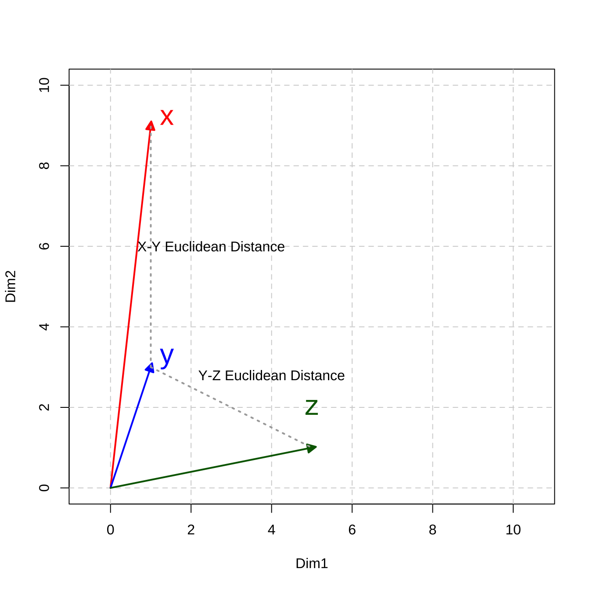
Figure 12.3: Distance-based Metric: Euclidean Distance
Similarity-based Metrics
In addition to distance-based metrics, we can measure the similarity of vectors using a similarity-based metric, which often utilizes the idea of correlations. The most commonly used one is Cosine Similarity, which can be computed as follows:
\[cos(\vec{x},\vec{y}) = \frac{\sum_{i=1}^{n}{x_i\times y_i}}{\sqrt{\sum_{i=1}^{n}x_i^2}\times \sqrt{\sum_{i=1}^{n}y_i^2}}\]
# comuting pairwise cosine similarity
sum(x*y)/(sqrt(sum(x^2))*sqrt(sum(y^2))) # xy
[1] 0.9778024
sum(y*z)/(sqrt(sum(y^2))*sqrt(sum(z^2))) # yz
[1] 0.4961389
sum(x*z)/(sqrt(sum(x^2))*sqrt(sum(z^2))) # xz
[1] 0.3032037The Cosine Similarity ranges from -1 (= the least similar) to 1 (= the most similar).
The geometric meanings of cosines of two vectors are connected to the arcs between the vectors: the greater their cosine similarity, the smaller the arcs, the closer they are.
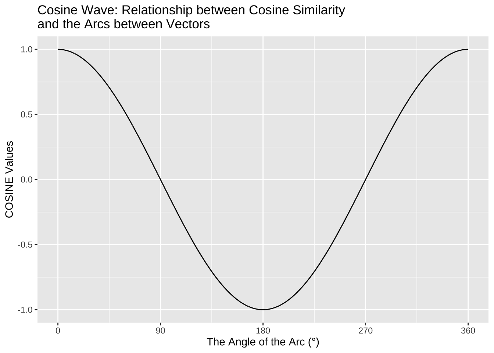
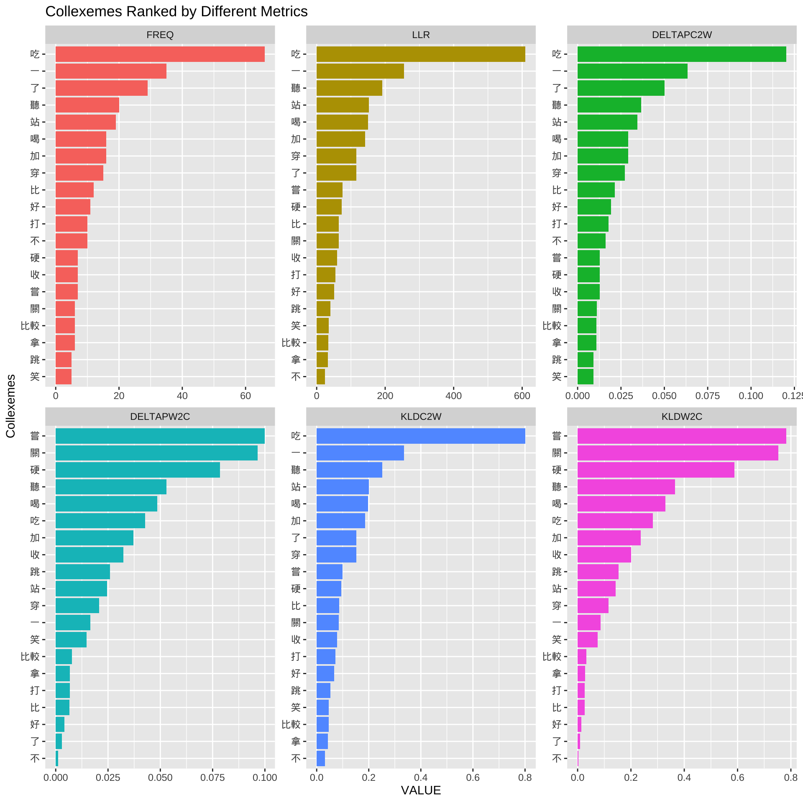
Cosine Similarity is related to Pearson Correlation. If you would like to know more about their differences, take a look at this comprehensive blog post, Cosine Similarity VS Pearson Correlation Coefficient.
Therefore, it is clear to see that cosine similarity highlights the documents similarities in terms of whether their values on all the dimensions (contextual features) vary in the same directions.
However, distance-based metrics would highlight the document similarities in terms of how much their values on all the dimensions differ.
Computing pairwise distance/similarity using quanteda
In quanteda.textstats library, there are two main functions that can help us compute pairwise similarities/distances between vectors using two useful functions:
textstat_simil(): similarity-based metricstextstat_dist(): distance-based metrics
The expected input argument of these two functions is a dfm and they compute all pairwise distance/similarity metrics in-between the rows of the DFM (i.e., the documents).
## Create a simple DFM
xyz_dfm <- as.dfm(matrix(c(1,9,1,3,5,1),
byrow=T,
ncol=2))
## Rename documents
docnames(xyz_dfm) <- c("X","Y","Z")
## Check
xyz_dfmDocument-feature matrix of: 3 documents, 2 features (0.00% sparse) and 0 docvars.
features
docs feat1 feat2
X 1 9
Y 1 3
Z 5 1textstat_simil object; method = "cosine"
X Y Z
X 1.000 0.978 0.303
Y 0.978 1.000 0.496
Z 0.303 0.496 1.000textstat_dist object; method = "euclidean"
X Y Z
X 0 6.00 8.94
Y 6.00 0 4.47
Z 8.94 4.47 0There are other useful functions in R that can compute the pairwise distance/similarity metrics on a matrix. When using these functions, please pay attention to whether they provide distance or similarity metrics because these two are very different in meanings.
For example, amap::Dist() provides cosine-based distance, not similarity.
X Y
Y 0.02219759
Z 0.69679634 0.50386106 X Y
Y 0.9778024
Z 0.3032037 0.4961389Interim Summary
- The Euclidean Distance metric is a distance-based metric: the larger the value, the more distant the two vectors.
- The Cosine Similarity metric is a similarity-based metric: the larger the value, the more similar the two vectors.
Based on our computations of the metrics for the three vectors, now in terms of the Euclidean Distance, y and z are closer; in terms of Cosine Similarity, x and y are closer.
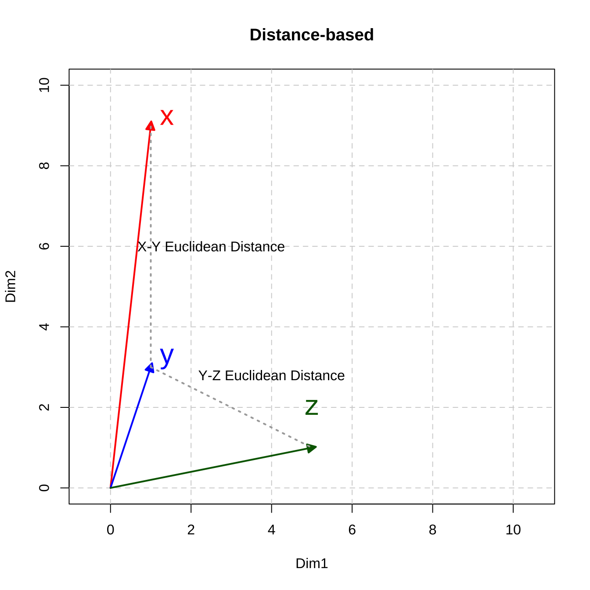
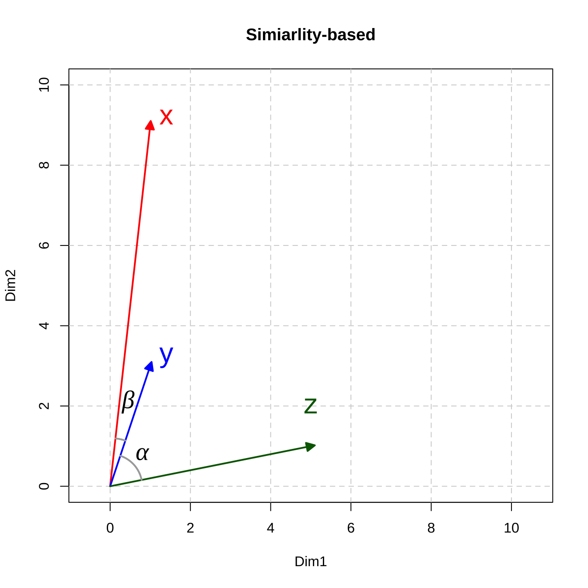
Therefore, it should now be clear that the analyst needs to decide which metric to use, or more importantly, which metric is more relevant. The key is which of the following is more important in the semantic representation of the documents/words:
- The absolute value differences that the vectors have on each dimension (i.e., the lengths of the vectors)
- The relative increase/decrease of the values on each dimension (i.e., the curvatures of vectors)
There are many other distance-based or similarity-based metrics available. For more detail, please see Manning & Schütze (1999) Ch15.2.2. and Jurafsky & Martin (2020) Ch6: Vector Semantics and Embeddings.
12.2.6 Multidimensional Space
Back to our example of corp_us_dfm, it is essentially the same vector representation, but in a multidimensional space (cf. Figure 12.4). The document in each row is represented as a vector of N dimensional space. The size of N depends on the number of contextual features that are included in the analysis of the dfm.
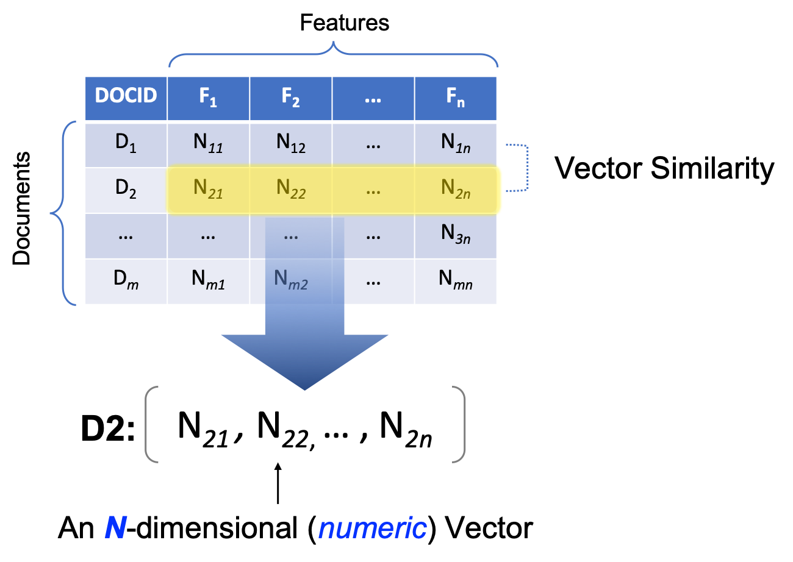
Figure 12.4: Example of Document-Feature Matrix
12.2.7 Feature Selection
A dfm may not be as informative as we have expected. To better capture the document’s semantics/topics, there are several important factors that need to be more carefully considered with respect to the contextual features of the dfm:
- The granularity of the features
- The informativeness of the features
- The distributional properties of the features
Granularity
In our previous example, we include only words, i.e., unigrams, as our contextual features in the corp_us_dfm. We can in fact include linguistic units at multiple granularities:
- raw word forms (
dfm()default contextual features) - (skipped) n-grams
- lemmas/stems
- Specific syntactic categories (e.g., lexical words)
For example, if you want to include bigrams, not unigrams, as features in the dfm, you can do the following:
- from
corpustotokens - from
tokenstongram-based tokens - from
ngram-based tokenstodfm
Or for English data, if you want to ignore the stem variations between words (i.e., house and houses may not be differ so much), you can do it this way:
We can of course create DFM based on stemmed bigrams:
## Create DFM based on stemmed bigrams
corp_us_dfm_bigram_stem <- corp_us_tokens %>% ## tokens
tokens_ngrams(n = 2) %>% ## bigram tokens
dfm() %>% ## dfm
dfm_wordstem() ## stemYou need to decide which types of contextual features are more relevant to your research question. In many text mining applications, people often make use of both unigrams and n-grams. However, these are only heuristics, not rules.
Exercise 12.1 Based on the dataset corp_us, can you create a dfm, where the features are trigrams but all the words in the trigrams are word stems not the original surface word forms? (see below)
Informativeness
There are words that are not so informative in telling us the similarity and difference between the documents because they almost appear in every document of the corpus, but carry little (referential) semantic contents.
Typical tokens include:
- Stopwords
- Numbers
- Symbols
- Control characters
- Punctuation marks
- URLs
The library quanteda has defined a default English stopword list, i.e., stopwords("en").
[1] "i" "me" "my" "myself" "we"
[6] "our" "ours" "ourselves" "you" "your"
[11] "yours" "yourself" "yourselves" "he" "him"
[16] "his" "himself" "she" "her" "hers"
[21] "herself" "it" "its" "itself" "they"
[26] "them" "their" "theirs" "themselves" "what"
[31] "which" "who" "whom" "this" "that"
[36] "these" "those" "am" "is" "are"
[41] "was" "were" "be" "been" "being"
[46] "have" "has" "had" "having" "do" [1] 175To remove stopwords from the
dfm, we can usedfm_remove()on thedfmobject.To remove numbers, symbols, or punctuation marks, we can further specify a few parameters for the function
tokens():remove_punct = TRUE: remove all characters in the Unicode “Punctuation” [P] classremove_symbols = TRUE: remove all characters in the Unicode “Symbol” [S] classremove_url = TRUE: find and eliminate URLs beginning with http(s)remove_separators = TRUE: remove separators and separator characters (Unicode “Separator” [Z] and “Control” [C] categories)
## Create new DFM
## w/o non-word tokens and stopwords
corp_us_dfm_unigram_stop_punct <- corp_us %>%
tokens(remove_punct = TRUE, ## remove non-word tokens
remove_symbols = TRUE,
remove_numbers = TRUE,
remove_url = TRUE) %>%
dfm() %>% ## Create DFM
dfm_remove(stopwords("en")) ## Remove stopwords from DFMWe can see that the number of features varies a lot when we operationalize the contextual features differently:
## Changes of Contextual Feature Numbers
nfeat(corp_us_dfm) ## default unigram version
[1] 9591
nfeat(corp_us_dfm_unigram_stem) ## unigram + stem
[1] 5693
nfeat(corp_us_dfm_bigram) ## bigram
[1] 65616
nfeat(corp_us_dfm_bigram_stem) ## bigram + stem
[1] 59086
nfeat(corp_us_dfm_unigram_stop_punct) ## unigram removing non-words/puncs
[1] 9359Distributional Properties
Finally, we can also select contextual features based on their distributional properties. For example:
- (Term) Frequency: the contextual feature’s frequency counts in the corpus
- Set a cut-off minimum to avoid hapax legomenon or highly idiosyncratic words
- Set a cut-off maximum to remove high-frequency function words, carrying little semantic content.
- Dispersion (Document Frequency)
- Set a cut-off minimum to avoid idiosyncratic or domain-specific words;
- Set a cut-off maximum to avoid stopwords;
- Other Self-defined Weights
- We can utilize association-based metrics to more precisely represent the association between a contextual feature and a document (e.g., PMI, LLR, TF-IDF).
In quanteda, we can easily specify our distributional cutoffs for contextual features:
- Frequency:
dfm_trim(DFM, min_termfreq = ..., max_termfreq = ...) - Dispersion:
dfm_trim(DFM, min_docfreq = ..., max_docfreq = ...) - Weights:
dfm_weight(DFM, scheme = ...)ordfm_tfidf(DFM)
Exercise 12.2 Please read the documentations of dfm_trim(), dfm_weight(), dfm_tfidf() very carefully and make sure you know how to use them.
In the following demo, we adopt a few strategies to refine the contextual features of the dfm:
- we create a simple unigram
dfmbased on the word-forms - we remove stopwords, punctuation marks, numbers, and symbols
- we include contextual words whose termfreq \(\geq\) 10 and docfreq \(\geq\) 3
## Create trimmed DFM
corp_us_dfm_trimmed <- corp_us %>% ## corpus
tokens( ## tokens
remove_punct = T,
remove_numbers = T,
remove_symbols = T
) %>%
dfm() %>% ## dfm
dfm_remove(stopwords("en")) %>% ## remove stopwords
dfm_trim(
min_termfreq = 10, ## frequency
max_termfreq = NULL,
termfreq_type = "count",
min_docfreq = 3, ## dispersion
max_docfreq = NULL,
docfreq_type = "count"
)
nfeat(corp_us_dfm_trimmed)[1] 1429In dfm_trim(), we can specify the cutoff values of min_termfreq/max_termfreq and min_docfreq/max_docfreq in different ways.
The numbers could refer to:
"count": Raw termfreq/docfreq counts;"prop": Normalized termfreq/docfreq (percentages);"rank": Inverted ranking of the features in terms of overall termfreq/docfreq;"quantile": Quantiles of termfreq/docfreq.
12.2.8 Exploratory Analysis of dfm
- We can check the top features in the current corpus:
people government us can must upon great
592 575 507 489 377 371 354
may states world nation country shall every
343 343 329 324 323 316 309
one peace new power now public
274 259 256 246 238 227 - We can visualize the top features using a word cloud:
## Create wordcloud
## Set random seed
## (to make sure consistent results for every run)
set.seed(100)
## Color brewer
require(RColorBrewer)
## Plot wordcloud
textplot_wordcloud(
corp_us_dfm_trimmed,
max_words = 200,
random_order = FALSE,
rotation = .25,
color = brewer.pal(7, "Dark2")
)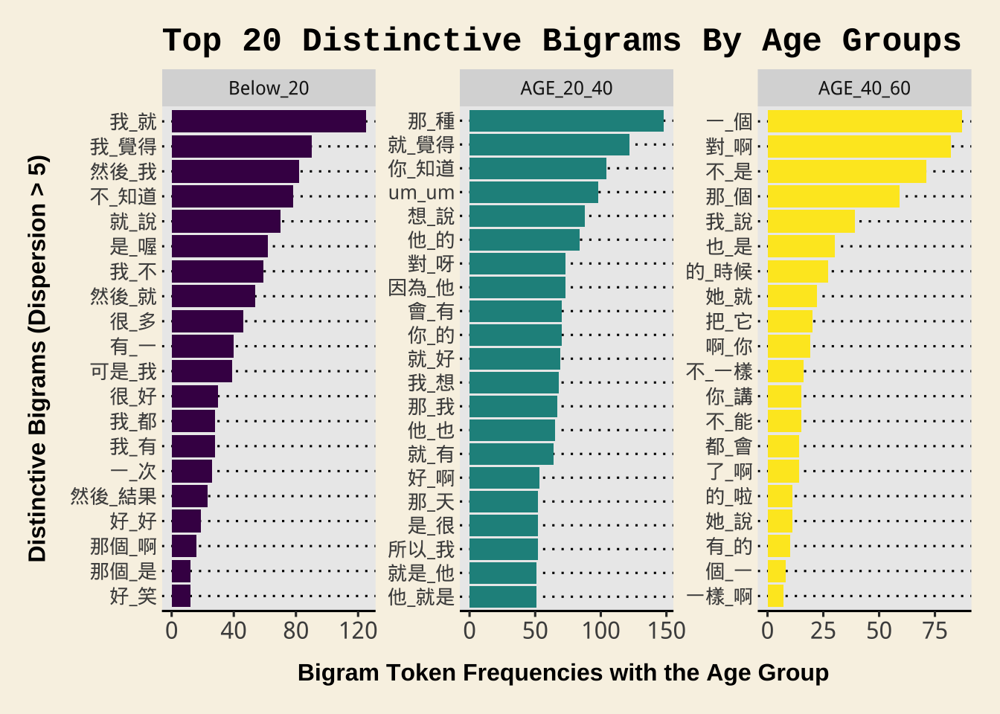
12.2.9 Document Similarity
As shown in 12.4, with the N-dimensional vector representation of each document, we can compute the mathematical distances/similarities between two documents.
In Section 12.2.5, we introduced two important metrics:
- Distance-based metric: Euclidean Distance
- Similarity-based metric: Cosine Similarity
quanteda provides useful functions to compute these metrics (as well as other alternatives): textstat_simil() and textstat_dist()
Before computing the document similarity/distance, we usually convert the frequency counts in dfm into more sophisticated metrics using normalization or weighting schemes.
There are two common schemes:
- Normalized Term Frequencies
- TF-IDF Weighting Scheme
Normalized Term Frequencies

- We can normalize these term frequencies into percentages to reduce the impact of the document size (i.e., marginal frequencies) on the significance of the co-occurrence frequencies.
Document-feature matrix of: 1 document, 5 features (0.00% sparse) and 4 docvars.
features
docs fellow-citizens senate house representatives among
1789-Washington 1 1 2 2 1Document-feature matrix of: 1 document, 5 features (0.00% sparse) and 4 docvars.
features
docs fellow-citizens senate house representatives
1789-Washington 0.002421308 0.002421308 0.004842615 0.004842615
features
docs among
1789-Washington 0.002421308Document-feature matrix of: 1 document, 5 features (0.00% sparse) and 4 docvars.
features
docs fellow-citizens senate house representatives
1789-Washington 0.002421308 0.002421308 0.004842615 0.004842615
features
docs among
1789-Washington 0.002421308TF-IDF Weighting SCheme

- A more sophisticated weighting scheme is TF-IDF scheme. We can weight the significance of term frequencies based on the term’s IDF.
Inverse Document Frequencies
- For each contextual feature, we can also assess their distinctive power in terms of their dispersion across the entire corpus.
- In addition to document frequency counts, there is a more effective metric, Inverse Document Frequency(IDF) (often used in Information Retrieval), to capture the distinctiveness of the features.
- The IDF of a term (\(w_i\)) in a corpus (\(D\)) is defined as the log-transformed ratio of the corpus size (\(|D|\)) to the term’s document frequency (\(df_i\)).
- The more widely dispersed the contextual feature is, the lower its IDF; the less dispersed the contextual feature, the higher its IDF.
\[ IDF(w_i, D) = log_{10}{\frac{|D|}{df_i}} \]
## Intuition for Inverse Document Frequency
## Docfreq of the first ten features
docfreq(corp_us_dfm_trimmed)[1:10]fellow-citizens senate house representatives among
19 9 8 14 43
life event greater order received
50 9 30 30 10 fellow-citizens senate house representatives among
0.49939765 0.82390874 0.87506126 0.63202321 0.14468279
life event greater order received
0.07918125 0.82390874 0.30103000 0.30103000 0.77815125 ## Intuition
corpus_size <- ndoc(corp_us_dfm_trimmed)
log(corpus_size/docfreq(corp_us_dfm_trimmed), 10)[1:10]fellow-citizens senate house representatives among
0.49939765 0.82390874 0.87506126 0.63202321 0.14468279
life event greater order received
0.07918125 0.82390874 0.30103000 0.30103000 0.77815125 - The TFIDF of a term (\(w_i\)) in a document (\(d_j\)) is the product of the word’s term frequency (TF) in the document (\(tf_{ij}\)) and the IDF of the term (\(log\frac{|N|}{df_i}\)).
\[ TFIDF(w_i, d_j) = tf_{ij} \times log\frac{|N|}{df_i} \]
Document-feature matrix of: 1 document, 5 features (0.00% sparse) and 4 docvars.
features
docs fellow-citizens senate house representatives among
1789-Washington 1 1 2 2 1Document-feature matrix of: 1 document, 5 features (0.00% sparse) and 4 docvars.
features
docs fellow-citizens senate house representatives among
1789-Washington 0.4993976 0.8239087 1.750123 1.264046 0.1446828## Intuition
TF_ex <- corp_us_dfm_trimmed[1,]
IDF_ex <- docfreq(corp_us_dfm_trimmed, scheme= "inverse")
TFIDF_ex <- TF_ex*IDF_ex
TFIDF_ex[1,1:5]Document-feature matrix of: 1 document, 5 features (0.00% sparse) and 4 docvars.
features
docs fellow-citizens senate house representatives among
1789-Washington 0.4993976 0.8239087 1.750123 1.264046 0.1446828We weight the dfm with the TF-IDF scheme before the document similarity analysis.
## weight DFM
corp_us_dfm_trimmed_tfidf <- dfm_tfidf(corp_us_dfm_trimmed)
## top features of count-based DFM
topfeatures(corp_us_dfm_trimmed, 20) people government us can must upon great
592 575 507 489 377 371 354
may states world nation country shall every
343 343 329 324 323 316 309
one peace new power now public
274 259 256 246 238 227 america union congress freedom upon constitution
60.06028 51.87024 41.04792 39.47051 39.34581 39.28820
americans laws today democracy revenue federal
37.47811 35.49017 34.61845 34.45844 33.95754 33.73896
states business public executive thank government
33.24013 32.94136 32.84299 32.76833 31.45365 30.97834
policy let
28.67896 28.52678 - Distance-based Results (Euclidean Distance)
## Distance-based: Euclidean
corp_us_euclidean <- textstat_dist(corp_us_dfm_trimmed_tfidf,
method = "euclidean")- Cosine-based Results (Cosine Similarity)
## Similarity-based: Cosine
corp_us_cosine <- textstat_simil(corp_us_dfm_trimmed_tfidf,
method = "cosine")As we have discussed in the previous sections, different distance/similarity metrics may give very different results. As an analyst, we can go back to the original documents and evaluate these quantitative results in a qualitative way.
For example, let’s manually check the document that is the most similar to 1789-Washington according to Euclidean Distance and Cosine Similarity:
1793-Washington
1 1841-Harrison
13 1789-Washington
"Fellow-Citizens of the Senate and of the House of Representatives:\n\nAmong the vicissitudes incident to life no event could have filled me with greater anxieties than that of which the notification was transmitted by your order, and received on the 14th day of the present month. On the one hand, I was summoned by my Country, whose voice I can never hear but with veneration and love, from a retreat wh" 1793-Washington
"Fellow citizens, I am again called upon by the voice of my country to execute the functions of its Chief Magistrate. When the occasion proper for it shall arrive, I shall endeavor to express the high sense I entertain of this distinguished honor, and of the confidence which has been reposed in me by the people of united America.\n\nPrevious to the execution of any official act of the President the Con" 1841-Harrison
"Called from a retirement which I had supposed was to continue for the residue of my life to fill the chief executive office of this great and free nation, I appear before you, fellow-citizens, to take the oaths which the Constitution prescribes as a necessary qualification for the performance of its duties; and in obedience to a custom coeval with our Government and what I believe to be your expec" 12.2.10 Cluster Analysis
The pairise distance/similarity matrices are sometimes less comprehensive. We can visulize the document distances in a more comprehensive way by an exploratory technique called hierarchical cluster analysis.
## distance-based
corp_us_hist_euclidean <- corp_us_euclidean %>%
as.dist %>% ## DFM to dist
hclust ## cluster analysis
## Plot dendrogram
# plot(corp_us_hist_euclidean, hang = -1, cex = 0.6)
require("ggdendro")
ggdendrogram(corp_us_hist_euclidean,
rotate = TRUE,
theme_dendro = TRUE)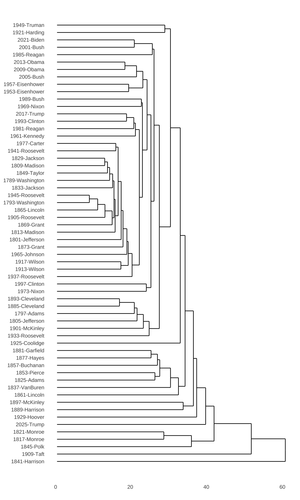
## similarity
corp_us_hist_cosine <- (1 - corp_us_cosine) %>% ## similarity to distance
as.dist %>%
hclust
## Plot dendrogram
# plot(corp_us_hist_cosine, hang = -1, cex = 0.6)
ggdendrogram(corp_us_hist_cosine,
rotate = TRUE,
theme_dendro = TRUE)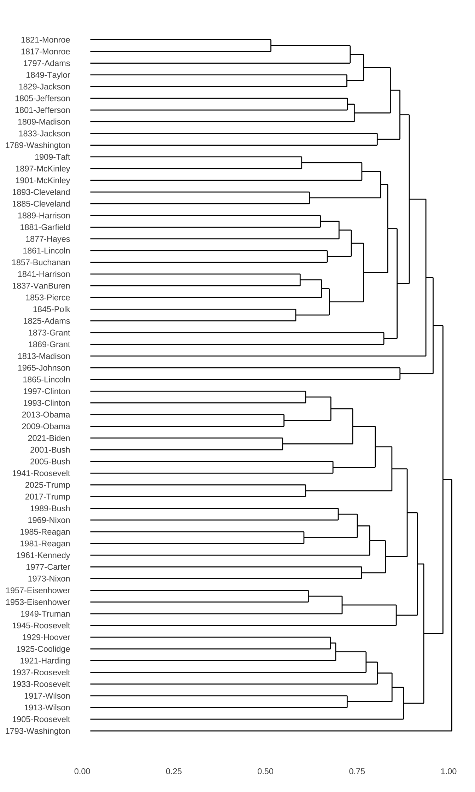
Please note that textstat_simil() gives us the
similarity matrix. In other words, the numbers in the
matrix indicate how similar the documents are. However, for
hierarchical cluster analysis, the function hclust()
expects a distance-based matrix, namely one indicating how dissimilar
the documents are. Therefore, we need to use
(1 - corp_us_cosine) in the cosine example before
performing the cluster analysis.
Cluster anlaysis is a very useful exploratory technique to examine the emerging structure of a large dataset. For more detail introduction to this statistical method, I would recommend Gries (2013) Ch 5.6 and the very nice introductory book, Kaufman & Rousseeuw (1990).
For more information on vector-space semantics, I would highly recommend the chapter of Vector Semantics and Embeddings, by Dan Jurafsky and James Martin.
12.3 Vector Space Model for Words (Self-Study)
So far, we have been talking about applying the vector space model to study the document semantics.
Now let’s take a look at how this distributional semantic approach can facilitate a lexical semantic analysis.
With a corpus, we can also study the distribution, or contextual features, of (target) words based on their co-occurring (contextual) words. Now I would like to introduce another object defined in quanteda, i.e., the Feature-Cooccurrence Matrix fcm.
12.3.1 Feature-Coocurrence Matrix (fcm)
A Feature-Cooccurrence Matrix is essentially a word co-occurrence matrix (i.e., a square matrix). There are two ways to create a fcm:
- from
tokenstofcm - from
dfmtofcm
12.3.2 From tokens to fcm
We can create a word co-occurrence matrix fcm from the tokens object.
We can further operationalize our contextual features for target words in two ways:
- Window-based: Only words co-occurring within a defined window size of the target word will be included as its contextual features
- Document-based: All words co-occurring in the same document as the target word will be included as its contextual features.
Window-based Contextual Features
## tokens object
corp_us_tokens <- tokens(
corp_us,
what = "word",
remove_punct = TRUE,
remove_symbol = TRUE,
remove_numbers = TRUE
)
## window-based FCM
corp_fcm_win_2 <- fcm(
corp_us_tokens, ## tokens
context = "window", ## context type
window = 2) # window size
## Check
corp_fcm_win_2Feature co-occurrence matrix of: 10,238 by 10,238 features.
features
features Fellow-Citizens of the Senate and House Representatives
Fellow-Citizens 0 2 2 0 0 0 0
of 0 168 4918 6 858 7 4
the 0 0 208 8 1498 10 1
Senate 0 0 0 0 4 1 0
and 0 0 0 0 296 2 0
House 0 0 0 0 0 0 4
Representatives 0 0 0 0 0 0 0
Among 0 0 0 0 0 0 0
vicissitudes 0 0 0 0 0 0 0
incident 0 0 0 0 0 0 0
features
features Among vicissitudes incident
Fellow-Citizens 0 0 0
of 3 1 2
the 2 3 4
Senate 0 0 0
and 0 2 1
House 0 0 0
Representatives 1 0 0
Among 0 1 0
vicissitudes 0 0 1
incident 0 0 0
[ reached max_nfeat ... 10,228 more features, reached max_nfeat ... 10,228 more features ]A look at the corp_fcm_win:
## Check top 10 contextual features
## for specific target worods
corp_fcm_win_2["our",] %>% colSums %>% sort(.,decreasing=T) %>% .[1:20] we our national institutions upon We
69 44 42 35 33 33
children Union Constitution history faith common
31 27 26 25 24 23
And lives strength us land Nation
22 22 22 21 20 20
laws world
19 18 We do America done us go ourselves upon
47 13 12 7 6 6 6 5
up There And what continue Our come take
5 5 5 5 5 5 5 4
depend citizen live preserved
4 4 4 4 Document-based Contextual Features
## Document-based FCM
corp_fcm_doc <- fcm(
corp_us_tokens,
context = "document")
## check
corp_fcm_docFeature co-occurrence matrix of: 10,238 by 10,238 features.
features
features Fellow-Citizens of the Senate and House
Fellow-Citizens 0 710 1057 2 507 2
of 0 685106 1821173 2042 874373 1408
the 0 0 1216870 2749 1163095 1968
Senate 0 0 0 3 1418 12
and 0 0 0 0 306258 909
House 0 0 0 0 0 3
Representatives 0 0 0 0 0 0
Among 0 0 0 0 0 0
vicissitudes 0 0 0 0 0 0
incident 0 0 0 0 0 0
features
features Representatives Among vicissitudes incident
Fellow-Citizens 2 1 1 2
of 996 514 701 1509
the 1350 688 897 2052
Senate 4 1 1 2
and 503 348 463 1108
House 6 2 2 2
Representatives 1 2 2 2
Among 0 0 2 1
vicissitudes 0 0 0 1
incident 0 0 0 2
[ reached max_nfeat ... 10,228 more features, reached max_nfeat ... 10,228 more features ]## Check top 10 contextual features
## for specific target words
corp_fcm_doc["our",] %>% colSums %>% sort(.,decreasing=T) %>% .[1:20] we our We us must upon
58036 49080 26069 21671 17234 15701
should world any power do only
13889 13431 11682 11012 10575 10553
peace America And American Our Constitution
10387 10353 8522 8257 8142 8121
freedom when
7850 7516 We us upon do any only must America
5173 3916 3258 2135 2023 1997 1996 1974
peace when freedom Our And But what law
1847 1506 1506 1491 1435 1374 1286 1272
make Congress work laws
1263 1207 1166 1084 In the above examples of fcm, we tokenize our corpus into tokens first and then use it to create the fcm. The advantage of our current method is that we can have a full control of the word tokenization, i.e., what tokens we would like to include in the fcm.
This can be particularly important when we deal with Chinese data.
12.3.3 From Feature Co-occurrence Matrices (FCM) to Collocations
Once we have the co-occurrence distributions of words within a fixed window, we can move beyond simple counts to calculate lexical associations. This allows us to identify meaningful collocations —- word pairs that appear together more often than would be expected by chance.
In the following workflow, we transform a Feature Co-occurrence Matrix (FCM) into a tidy format to calculate association measures like Mutual Information (MI) and the t-score.
- Step 1: Converting FCM to a Tidy Format
First, we convert the fcm object into a data frame where each row represents a pair of co-occurring words.
## window-based FCM
corp_fcm_win_5 <- fcm(
corp_us_tokens, ## tokens
context = "window", ## context type
window = 5) # window size
## Convert fcm to a data frame
corp_fcm_win_5_df <- tidytext::tidy(corp_fcm_win_5)
head(corp_fcm_win_5_df)- Step 2: Extracting Global Word Frequencies
To determine if a pair is “special,” we need to know how often each word appears individually across the entire corpus. We use dfm() and textstat_frequency() from quanteda to generate this reference list.
## Get lexical frequencies for the whole corpus
corp_word_freq_list <- corp_us_tokens %>%
dfm(tolower = FALSE) %>%
textstat_frequency- Step 3: Preparing the Contingency Table Data
We now align our co-occurrence counts (\(O_{11}\)) with the marginal frequencies of the individual words (\(R_1\) and \(C_1\)). We also filter out self-pairs and rare (low-frequency) combinations to reduce statistical noise.
## Prepare numbers for collocation analysis
corp_fcm_win_5_df <- corp_fcm_win_5_df %>%
rename(w1 = document, w2 = term, O11 = count) %>%
filter(w1 != w2) %>% # Remove self-pairs (e.g., "the-the")
filter(O11 >= 5) %>% # Remove rare pairs to ensure statistical reliability
mutate(
R1 = corp_word_freq_list$frequency[match(w1, corp_word_freq_list$feature)],
C1 = corp_word_freq_list$frequency[match(w2, corp_word_freq_list$feature)]
)
head(corp_fcm_win_5_df)- Step 4: Calculating Association Measures
With our observed frequencies (\(O_{11}\)) and marginal totals ready, we calculate the Expected Frequency (\(E_{11}\)) and use it to derive association scores.
- Mutual Information (MI): Highlights strongly bonded pairs, though it can be biased toward rare words.
- t-score: Measures the confidence that the association is not due to chance, which is often better for identifying frequent, stable collocations.
## Calculate lexical associations
corp_collocations <- corp_fcm_win_5_df %>%
# Compute the expected frequency of the bigram
mutate(E11 = (R1 * C1) / TOTAL_N) %>%
# Compute Mutual Information and t-score
mutate(
MI = log2(O11 / E11),
t = (O11 - E11) / sqrt(O11)
) %>%
arrange(desc(MI)) # Sort by strongest association
## Inspect ranked collocations for a specific keyword
corp_collocations %>%
filter(w1 == "we") %>%
arrange(desc(MI))12.3.4 Lexical Similarity
fcm is an interesting structure because, similar to dfm, we can now examine the pairwise relationships in-between all target words.
In particular, based on this FCM, we can further analyze which target words tend to co-occur with similar sets of contextual words.
And based on these quantitative pairwise similarities in-between target words, we can visualize their lexical relations with a network or a cluster dendrogram.
## Create window size 5 FCM
corp_fcm_win_5 <- fcm(corp_us_tokens,
context = "window",
window = 5)
## Remove stopwords
corp_fcm_win_5_select <- corp_fcm_win_5 %>%
fcm_remove(
pattern = stopwords(),
case_insensitive = T
)- We first identify a list of top 50/100 contextual feature words
## Find top features
corp_fcm_win_5_top50 <- corp_fcm_win_5_select %>% colSums %>% sort(.,decreasing=T) %>% .[1:50]
corp_fcm_win_5_top100 <-corp_fcm_win_5_select %>% colSums %>% sort(.,decreasing=T) %>% .[1:100]
corp_fcm_win_5_top50 us upon peace must freedom Americans
585 568 429 415 408 353
today States great work make God
308 287 285 285 284 282
best law America come among world
277 253 251 250 249 247
power spirit laws Nation know Union
246 240 237 236 234 233
shall war progress help purpose always
229 225 224 220 218 217
business Let need American part within
216 215 212 211 211 208
let people century Constitution seek free
205 201 197 190 188 187
political Congress strength democracy economic justice
186 184 184 184 181 180
trade man
179 178 us upon peace must freedom
585 568 429 415 408
Americans today States great work
353 308 287 285 285
make God best law America
284 282 277 253 251
come among world power spirit
250 249 247 246 240
laws Nation know Union shall
237 236 234 233 229
war progress help purpose always
225 224 220 218 217
business Let need American part
216 215 212 211 211
within let people century Constitution
208 205 201 197 190
seek free political Congress strength
188 187 186 184 184
democracy economic justice trade man
184 181 180 179 178
government home action also responsibility
176 171 167 166 166
new common old unity America's
165 165 164 161 161
foreign race ago force believe
160 158 157 156 155
now rights support promise interest
154 154 153 153 152
true Federal Government even change
152 151 149 148 148
nation long faith whether history
147 145 143 143 141
stand President forward peoples opportunity
141 140 139 139 138
women better strong may liberty
138 137 137 136 136
whole countrymen ever find done
136 136 135 135 135
office protection revenue others control
134 134 134 133 133 - We subset the FCM where the target and contextual words are on the top 50 important contextual features.
- We then create a network of these top 50 important features.
## Subset fcm for plot
fcm4network <- fcm_select(corp_fcm_win_5_select,
pattern = names(corp_fcm_win_5_top50),
selection = "keep",
valuetype = "fixed")
fcm4networkFeature co-occurrence matrix of: 86 by 86 features.
features
features Among people States Great nation free shall great world union
Among 0 0 0 0 0 0 0 0 0 0
people 0 8 30 0 10 17 8 22 14 0
States 0 0 10 2 3 5 3 5 1 5
Great 0 0 0 0 0 0 0 1 2 0
nation 0 0 0 0 6 5 2 20 5 1
free 0 0 0 0 0 32 8 6 10 1
shall 0 0 0 0 0 0 12 3 4 0
great 0 0 0 0 0 0 0 14 8 1
world 0 0 0 0 0 0 0 0 14 0
union 0 0 0 0 0 0 0 0 0 4
[ reached max_nfeat ... 76 more features, reached max_nfeat ... 76 more features ]## plot semantic network of top features
require(scales)
textplot_network(
fcm4network,
min_freq = 5,
vertex_labelcolor = c("grey40"),
vertex_labelsize = 2 * scales::rescale(rowSums(fcm4network +
1), to = c(1.5, 5))
)Exercise 12.3 In the above example, our original goal was to subset the FCM by including only the target words (rows) and contextual features (columns) that are on the list of the top 50 contextual features (names(corp_fcm_win_5_top50)). In other words, the subset FCM should have been a 50 by 50 matrix? But it’s not. Why?
- In addition to a network, we can also create a dendrogram showing the semantic relations in-between a set of contextual features. (For example, the following shows a cluster analysis of the top 100 contextual features.)
## plot the dendrogram
## compute cosine similarity
fcm4network <- corp_fcm_win_5_select %>%
fcm_keep(pattern = names(corp_fcm_win_5_top100))
## Check dimensions
fcm4networkFeature co-occurrence matrix of: 164 by 164 features.
features
features Among may people States Government Great nation government new
Among 0 0 0 0 0 0 0 0 0
may 0 4 9 3 8 0 0 5 4
people 0 0 8 30 6 0 10 20 2
States 0 0 0 10 13 2 3 7 7
Government 0 0 0 0 4 0 2 1 6
Great 0 0 0 0 0 0 0 1 0
nation 0 0 0 0 0 0 6 3 3
government 0 0 0 0 0 0 0 10 9
new 0 0 0 0 0 0 0 0 36
free 0 0 0 0 0 0 0 0 0
features
features free
Among 0
may 2
people 17
States 5
Government 1
Great 0
nation 5
government 15
new 4
free 32
[ reached max_nfeat ... 154 more features, reached max_nfeat ... 154 more features ]## network
textplot_network(
fcm4network,
min_freq = 5,
vertex_labelcolor = c("grey40"),
vertex_labelsize = 2 * scales::rescale(rowSums(fcm4network +
1), to = c(1.5, 5))
)## Remove words with no co-occurrence data
fcm4cluster <- corp_fcm_win_5_select[names(corp_fcm_win_5_top100),]
## check
fcm4clusterFeature co-occurrence matrix of: 100 by 9,996 features.
features
features Fellow-Citizens Senate House Representatives Among vicissitudes
us 0 0 0 0 0 0
upon 0 0 0 0 0 0
peace 0 0 0 0 0 0
must 0 0 0 0 0 0
freedom 0 0 0 0 0 0
Americans 0 0 0 0 0 0
today 0 0 0 0 0 0
States 0 0 0 0 0 0
great 0 0 0 0 0 0
work 0 0 0 0 0 0
features
features incident life event filled
us 0 0 0 0
upon 0 0 0 0
peace 0 0 0 0
must 0 0 0 0
freedom 0 0 0 0
Americans 0 0 0 0
today 0 0 0 0
States 0 0 0 0
great 0 0 0 0
work 0 0 0 0
[ reached max_nfeat ... 90 more features, reached max_nfeat ... 9,986 more features ]## cosine
fcm4cluster_cosine <- textstat_simil(fcm4cluster, method = "cosine")
## create hclust
fcm_hclust<- hclust(as.dist((1 - fcm4cluster_cosine)))
## plot dendrogram v1
plot(as.dendrogram(fcm_hclust, hang = 0.3),
horiz = T,
cex = 0.6)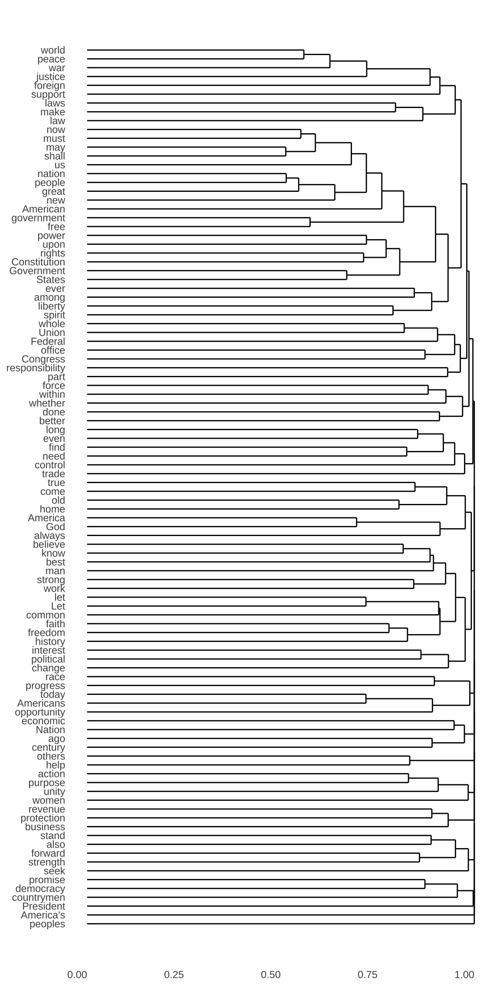
The dfm or fcm come with many potentials. Please refer to the quanteda documentation for more applications.
12.4 Exercises
Exercise 12.4 In this exercise, please create a dendrogram of the documents included in corp_us according to their similarities in trigram uses.
Specific steps are as follows:
- Please create a
dfm, where the contextual features are the trigrams in the documents. - After you create the
dfm, please trim thedfmaccording to the following distributional criteria:
- Include only trigrams consisting of
\\wcharacters ((usingdfm_select()) - Include only trigrams whose frequencies are \(\geq\) 2 (using
dfm_trim()) - Include only trigrams whose document frequencies are \(\geq\) 2 (i.e., used in at least two different presidential addresses)
- Please use the cosine-based distance for cluster analysis
- A Sub-sample of the trigram-based
dfm(after the trimming according to the above distributional cut-off, the total number of trigrams in thedfmis: 7917):
- Example of the dendrogram based on the trigram-based
dfm:
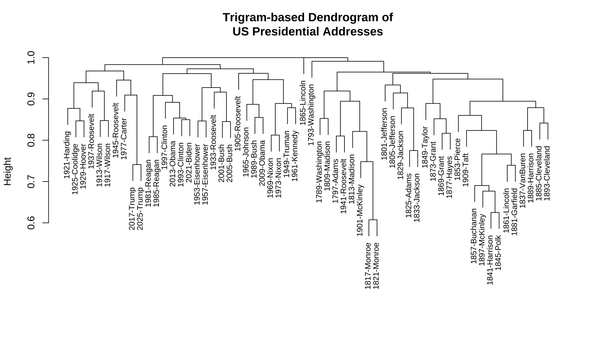
Exercise 12.5 Based on the corp_us, we can study how words are connected to each other. In this exercise, please create a dendrogram of important words in the corp_us according to their similarities in their co-occurring words. Specific steps are as follows:
- Please create a
tokensobject ofcorpusby removing punctuations, symbols, and numbers first. - Please create a window-based
fcmof the corpus from thetokensobject by including words within the window size of 5 as the contextual words - Please remove all the stopwords included in
quanteda::stopwords()from thefcm - Please create a dendrogram for the top 50 important words from the resulting
fcmusing the cosine-based distance metrics. When clustering the top 50 features, use the co-occurrence information from the entirefcm, i.e., clustering these top 50 features according to their co-occurring words within the window size.
- A Sub-sample of the
fcm(after removing the stopwords, there are 9996 features in thefcm):
The dimension of the input matrix for
textstats_simil()should be: 50 rows and 9996 columns.Example of the dendrogram of the top 50 features in
fcm:
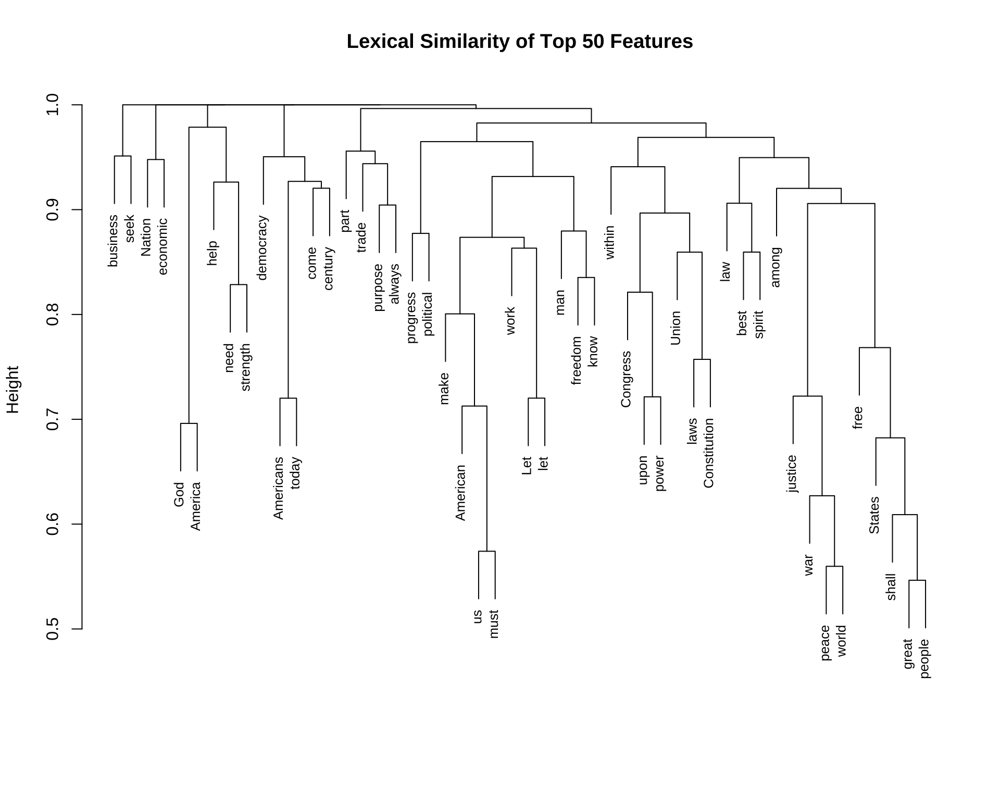
Exercise 12.6 In this exercise, please create a dendrogram of the Taiwan Presidential Addresses included in demo_data/TW_President.tar.gz according to their similarities in ngram uses.
Specific steps are as follows:
- Load the corpus data and word-tokenize the texts using
jiebaRto create atokensobject of the corpus - Before word segmentation, normalize the texts by removing all white-spaces and line-breaks.
- During the word-tokenization, please remove symbols by setting
worker(..., symbol = F) - Please add the following terms into the self-defined dictionary of
jiebaR:
c("馬英九", "英九", "蔣中正", "蔣經國", "李登輝", "登輝" ,"陳水扁", "阿扁", "蔡英文")- Create the
dfmof the corpus, where the contextual features are (contiguous) unigrams, bigrams and trigrams in the documents. - Please trim the
dfmaccording to the following distributional criteria:
- Include only ngrams whose frequencies >= 5.
- Include only ngrams whose document frequencies >= 3 (i.e., used in at least three different presidential addresses)
- Convert the count-based DFM into TF-IDF DFM using
dfm_tfidf() - Please use the cosine-based distance for cluster analysis
- A Sub-sample of the trimmed
dfm(Count-based; Number of features: 1183):
- A Sub-sample of the trimmed
dfm(TFIDF-based; Number of features: 1183):
- Example of the dendrogram:
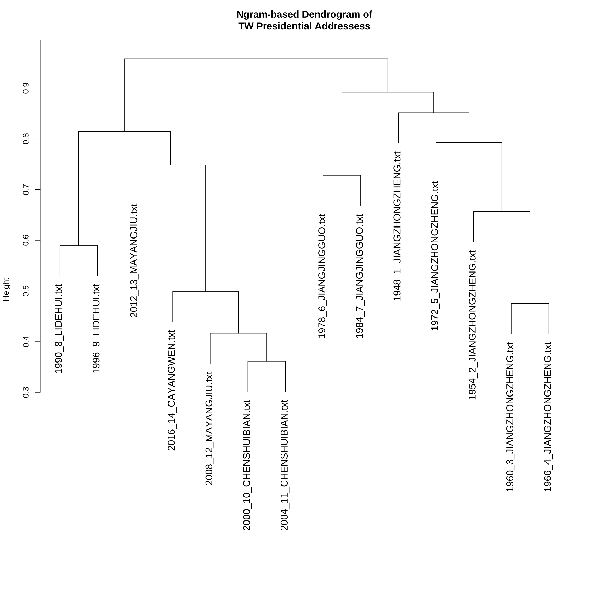
Exercise 12.7 Based on the Taiwan Presidential Addresses Corpus included in demo_data/TW_President.tar.gz, we can study how words are connected to each other. In this exercise, please create a dendrogram of important words in the corpus according to their similarities in their co-occurring words. Specific steps are as follows:
- Load the corpus data and word-tokenize the texts using
jiebaRto create atokensobject of the corpus - Follow the principles discussed in the previous exercise about text normalization and word segmentation.
- Please create a window-based
fcmof the corpus from thetokensobject by including words within the window size of 2 as the contextual words. - Please remove all the stopwords included in
demo_data/stopwords-ch.txtfrom thefcm - After you get the
fcm, create a network for the FCM’s top 50 features usingtextplot_network(). - Create a dendrogram for the top 100 important features of
fcmusing the cosine-based distance metrics. When clustering the top 100 features, use the co-occurrence information from the entirefcm, i.e., clustering these top 100 features according to all their co-occurring words within the window size.
- A sub-sample of the
fcm(After removing stopwords, the FCM dimensions are 5234 by 5234:
- Network of the top 50 features (Try to play with the aesthetic specifications of the network so that the node sizes reflect the total frequency of each word in the FCM):
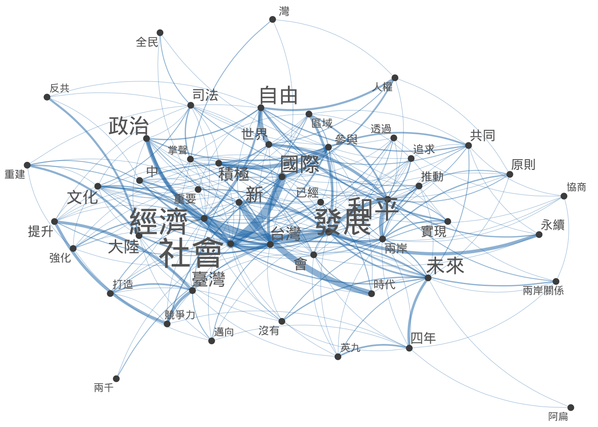
The dimension of the input FCM for
textstats_simil()should be: 100 rows and 5234 columns.Example of the dendrogram:
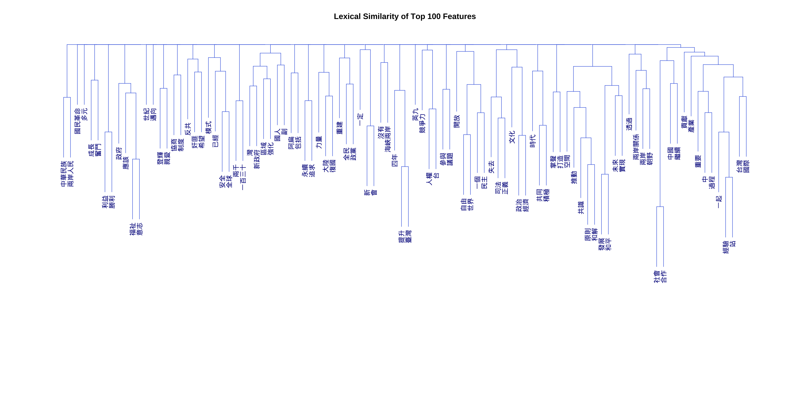